Task description
We developed an emotion priming paradigm combined with a delayed-match-to-sample-task to examine categorical differences in facial expression processing in young children. In particular, EEG was recorded while preschoolers observed pairs of faces presented sequentially. In some trials, the two sequential facial stimuli (hereafter: ‘Face 1’ and ‘Face 2’) were identical, while in other trials they differed with regards to the facial expression displayed (happy, angry, or neutral).
We calculated linear mixed models (LMM) separately for each ERP component. As fixed factors, all models included treatment contrasts for facial expressions (emotional [average of happy/angry] vs. neutral faces (Emo_Neu), happy vs. angry faces (Hap_Ang)), repetition (novel vs. repeated emotion trials (Rep_Nov)) as well as their interaction (Emo_NeuxRep_Nov, Hap_AngxRep_Nov). We analyzed effects for Face 1 and Face 2 separately. For Face 1, we only used the facial expression contrasts. As hemispheric differences were previously reported for the N170 component, we included hemisphere as additional fixed factor for the N170 analysis (treatment contrast: left vs. right ROI). Working memory (WM_scal) was entered as a scaled covariate in all LMM analyses to control for cognitive task demands. Additionally, we entered stimulus contrast (contr_F1_scal,contr_F2_scal) as a scaled covariate to control for low-level differences.
The random effects structure included random intercepts for participants ((1|ID)) and stimulus ((1|Stim_Type)). For each model, we commenced with the maximal random effect structure. Random intercepts were defined for participants and stimuli. Random slopes were defined for all predictors, but not covariates. We set correlations of random terms to zero and performed a principal component analysis on the random-effects variance-covariance estimates to determine the number of components supported by the data. We removed random effects explaining zero variance, in order to prevent over-parametrization. Afterwards, we checked whether all random intercepts improved the model using likelihood-ratio-testing.
Assumptions for multiple regression were checked for all models (normality of the residuals, linearity, multicollinearity, homoscedasticity).
We predicted that amplitudes would be larger for emotional compared to neutral facial expressions. We expected happy facial expressions to elicit the largest amplitudes, followed by angry and neutral facial expressions. Assuming that comprehensive facial expression representations are in place for young children, we expected an amplitude decrease in response to identical facial expressions. Again, we predicted that happy facial expressions would elicit the largest amplitude reduction compared to angry or neutral expressions because they are the most readily processed.
ERP results
Descriptive statistics
ERP waveforms and topographies at Face 1. Top row: Grand-averaged P1 and P3 (left side) and N170 (right side) waveforms for happy, angry and neutral facial expressions. Shadowed areas indicate the time windows used to identify participants' individual peaks and mean amplitudes. Bottom row: Topographies of the averaged P1 activity (90-130 ms) displaying difference waves for facial expression contrasts (from the left): angry–neutral, happy–neutral and happy–angry.
## P1/P3 trajectories
# Load data
Face1_data = read.csv("./data/ROI_P1_P3_Face1.csv", header = TRUE)
# De-select participants
Face1_data = Face1_data[with(Face1_data, !(Face1_data$ID == "05")), ]
# Select time window
Face1_data = Face1_data[(Face1_data$Time >= -200) & (Face1_data$Time <= 600), ]
# Rename conditions
Face1_data$Condition[Face1_data$Condition == 1] = "happy"
Face1_data$Condition[Face1_data$Condition == 2] = "neutral"
Face1_data$Condition[Face1_data$Condition == 3] = "angry"
# Select conditions of interest
Face1_data_all_emo_sep = Face1_data[(Face1_data$Condition == "happy") | (Face1_data$Condition ==
"angry") | (Face1_data$Condition == "neutral"), ]
# Factor and level emotion
Face1_data_all_emo_sep$Condition = factor(Face1_data_all_emo_sep$Condition, levels = c("neutral",
"happy", "angry"))
# Plot data
P1_P3_val_traj = ggplot(Face1_data_all_emo_sep, aes(Time, ROI_Average)) + theme(panel.background = element_blank(),
panel.border = element_rect(colour = "grey", fill = NA, size = 2), axis.title.y = element_text(size = 8,
margin = margin(t = 0, r = 5, b = 0, l = 0)), axis.title.x = element_text(size = 8,
margin = margin(t = 0, r = 0, b = 0, l = 0)), legend.text = element_text(size = 7),
legend.key = element_rect(fill = "white"), text = element_text(size = 8)) + stat_summary(fun.y = mean,
geom = "line", size = 0.6, aes(linetype = Condition)) + scale_linetype_manual(name = "Emotion",
values = c("solid", "longdash", "dotted")) + scale_color_discrete(guide = guide_legend(override.aes = list(color = "white"))) +
labs(x = "\nTime [ms]", y = expression(paste("Amplitude [", mu, "V]")), colour = "") +
theme(legend.position = "right") + coord_cartesian(ylim = c(-2, 14), xlim = c(-100,
600)) + scale_y_continuous(breaks = seq(-2, 14, 4)) + scale_x_continuous(breaks = seq(-100,
600, 200)) + geom_vline(xintercept = 0, linetype = "dashed", colour = "grey") +
geom_hline(yintercept = 0, linetype = "dashed", colour = "grey") + annotate("rect",
xmin = 90, xmax = 130, ymin = -2.5, ymax = 14.5, alpha = 0.3) + annotate("rect",
xmin = 300, xmax = 500, ymin = -2.5, ymax = 14.5, alpha = 0.3)
## N170 trajectories
# Load data
Face1_data_l = read.csv("./data/left_ROI_N170_Face1.csv", header = TRUE)
Face1_data_r = read.csv("./data/right_ROI_N170_Face1.csv", header = TRUE)
# Select time windows
Face1_data_l = Face1_data_l[(Face1_data_l$Time >= -200) & (Face1_data_l$Time <= 600),
]
Face1_data_r = Face1_data_r[(Face1_data_r$Time >= -200) & (Face1_data_r$Time <= 600),
]
# De-select participants
Face1_data_l = Face1_data_l[with(Face1_data_l, !(Face1_data_l$ID == "05")), ]
Face1_data_r = Face1_data_r[with(Face1_data_r, !(Face1_data_r$ID == "05")), ]
# Rename conditions
Face1_data_l$Condition[Face1_data_l$Condition == 1] = "happy"
Face1_data_l$Condition[Face1_data_l$Condition == 2] = "neutral"
Face1_data_l$Condition[Face1_data_l$Condition == 3] = "angry"
Face1_data_r$Condition[Face1_data_r$Condition == 1] = "happy"
Face1_data_r$Condition[Face1_data_r$Condition == 2] = "neutral"
Face1_data_r$Condition[Face1_data_r$Condition == 3] = "angry"
# Select conditions of interest
Face1_data_all_emo_sep_l = Face1_data_l[(Face1_data_l$Condition == "happy") | (Face1_data_l$Condition ==
"angry") | (Face1_data_l$Condition == "neutral"), ]
Face1_data_all_emo_sep_r = Face1_data_r[(Face1_data_r$Condition == "happy") | (Face1_data_r$Condition ==
"angry") | (Face1_data_r$Condition == "neutral"), ]
# Factor and level emotion
Face1_data_all_emo_sep_l$Condition = factor(Face1_data_all_emo_sep_l$Condition, levels = c("neutral",
"happy", "angry"))
Face1_data_all_emo_sep_r$Condition = factor(Face1_data_all_emo_sep_r$Condition, levels = c("neutral",
"happy", "angry"))
# Average N170 trajectories for left and right hemisphere
Face1_N170 = (Face1_data_all_emo_sep_l + Face1_data_all_emo_sep_r)/2
Face1_N170$Condition = Face1_data_all_emo_sep_l$Condition
# Plot N170 trajectory
N170_val_traj = ggplot(Face1_N170, aes(Time, ROI_Average)) + theme(panel.background = element_blank(),
panel.border = element_rect(colour = "grey", fill = NA, size = 2), axis.title.y = element_text(size = 8,
margin = margin(t = 0, r = 0, b = 0, l = 0)), axis.title.x = element_text(size = 8,
margin = margin(t = 0, r = 0, b = 0, l = 0)), legend.text = element_text(size = 8),
legend.key = element_rect(fill = "white"), text = element_text(size = 8)) + stat_summary(fun.y = mean,
geom = "line", size = c(0.6), aes(linetype = Condition)) + scale_linetype_manual(values = c("solid",
"longdash", "dotted")) + theme(legend.position = "none") + labs(x = "\nTime [ms]",
y = expression(paste("")), colour = "") + coord_cartesian(ylim = c(-5, 4), xlim = c(-100,
600)) + scale_y_continuous(breaks = seq(-6, 6, 2)) + scale_x_continuous(breaks = seq(-100,
600, 200)) + geom_vline(xintercept = 0, linetype = "dashed", colour = "grey") +
geom_hline(yintercept = 0, linetype = "dashed", colour = "grey") + annotate("rect",
xmin = 180, xmax = 220, ymin = -5.5, ymax = 4.5, alpha = 0.3)
# Put plots together
plots_EEG_F1 = cowplot::plot_grid(P1_P3_val_traj + theme(legend.position = "none"),
N170_val_traj + theme(legend.position = "none"), align = "vh", hjust = -1, nrow = 1)
# Get legend
legend_ERP = get_legend(P1_P3_val_traj + theme(legend.box.margin = margin(0, 0, 0,
0)))
# Load topography information
Topo_Emo = read.csv(file = "./data/ERPs_Topo_Face1.csv", header = TRUE, sep = ",")
# Exclude participant
Topo_Emo = Topo_Emo[with(Topo_Emo, !(Topo_Emo$ID == 5)), ]
# Re-name to fit topoplot function
names(Topo_Emo)[names(Topo_Emo) == "Time"] = "time"
# Change from wide to long format for electrodes
Topo_Emo = gather(Topo_Emo, electrode, amplitude, Fp1:Oz, factor_key = TRUE)
# Rename A1/A2
names(Topo_Emo)[names(Topo_Emo) == "A1"] <- "TP9"
names(Topo_Emo)[names(Topo_Emo) == "A2"] <- "TP10"
# Plot topoplots for happy
Topo_Emo_Hap = subset(Topo_Emo, Condition == 1)
# Plot topoplots for neutral
Topo_Emo_Neu = subset(Topo_Emo, Condition == 2)
# Plot topoplots for angry
Topo_Emo_Ang = subset(Topo_Emo, Condition == 3)
# Calculate difference score angry-neutral
Topo_Diff_Ang_Neu = data.frame(ID = Topo_Emo_Hap[, 1], time = Topo_Emo_Hap[, 3],
electrode = Topo_Emo_Hap[, 4], amplitude = Topo_Emo_Ang$amplitude - Topo_Emo_Neu$amplitude)
# Calculate difference score happy-neutral
Topo_Diff_Hap_Neu = data.frame(ID = Topo_Emo_Hap[, 1], time = Topo_Emo_Hap[, 3],
electrode = Topo_Emo_Hap[, 4], amplitude = Topo_Emo_Hap$amplitude - Topo_Emo_Neu$amplitude)
# Calculate difference score happy-angry
Topo_Diff_Hap_Ang = data.frame(ID = Topo_Emo_Hap[, 1], time = Topo_Emo_Hap[, 3],
electrode = Topo_Emo_Hap[, 4], amplitude = Topo_Emo_Hap$amplitude - Topo_Emo_Ang$amplitude)
## P1s
# Select time windows
Topo_Diff_Ang_Neu_P1 = subset(Topo_Diff_Ang_Neu, time >= 90 & time <= 130)
Topo_Diff_Hap_Neu_P1 = subset(Topo_Diff_Hap_Neu, time >= 90 & time <= 130)
Topo_Diff_Hap_Ang_P1 = subset(Topo_Diff_Hap_Ang, time >= 90 & time <= 130)
# Add electrode information
Topo_Diff_Ang_Neu_P1 = electrode_locations(Topo_Diff_Ang_Neu_P1, electrode = "electrode",
drop = FALSE, montage = NULL)
Topo_Diff_Hap_Neu_P1 = electrode_locations(Topo_Diff_Hap_Neu_P1, electrode = "electrode",
drop = FALSE, montage = NULL)
Topo_Diff_Hap_Ang_P1 = electrode_locations(Topo_Diff_Hap_Ang_P1, electrode = "electrode",
drop = FALSE, montage = NULL)
# Draw topographies
topo_diff_ang_neu_P1 = ggplot(Topo_Diff_Ang_Neu_P1, aes(x = x, y = y, fill = amplitude,
label = electrode)) + ggtitle("angry – neutral") + geom_topo(grid_res = 300,
interp_limit = "head", chan_markers = "point", chan_size = 0.5, head_size = 0.9) +
scale_fill_distiller(palette = "RdBu", limits = c(-2, 2)) + theme_void() + coord_equal() +
labs(fill = expression(paste("Amplitude (", mu, "V)"))) + theme(legend.position = "none",
plot.title = element_text(size = 8, face = "bold", hjust = 0.5))
# Draw topographies
topo_diff_hap_neu_P1 = ggplot(Topo_Diff_Hap_Neu_P1, aes(x = x, y = y, fill = amplitude,
label = electrode)) + ggtitle(" happy – neutral") + geom_topo(grid_res = 300,
interp_limit = "head", chan_markers = "point", chan_size = 0.5, head_size = 0.9) +
scale_fill_distiller(palette = "RdBu", limits = c(-2, 2)) + theme_void() + coord_equal() +
labs(fill = expression(paste("Amplitude (", mu, "V)"))) + theme(legend.position = "none",
plot.title = element_text(size = 8, face = "bold", hjust = 0.5))
# Draw topographies
topo_diff_hap_ang_P1 = ggplot(Topo_Diff_Hap_Ang_P1, aes(x = x, y = y, fill = amplitude,
label = electrode)) + ggtitle(" happy – angry") + geom_topo(grid_res = 300,
interp_limit = "head", chan_markers = "point", chan_size = 0.5, head_size = 0.9) +
scale_fill_distiller(palette = "RdBu", limits = c(-2, 2)) + theme_void() + coord_equal() +
labs(fill = expression(paste("Amplitude (", mu, "V)"))) + theme(legend.position = "none",
plot.title = element_text(size = 8, face = "bold", hjust = 0.5))
# Get topo legend
topo_diff_hap_ang_P1_leg = ggplot(Topo_Diff_Hap_Ang_P1, aes(x = x, y = y, fill = amplitude,
label = electrode)) + ggtitle(" happy – angry") + geom_topo(grid_res = 300,
interp_limit = "head", chan_markers = "point", chan_size = 0.5, head_size = 0.9) +
scale_fill_distiller(palette = "RdBu", limits = c(-2, 2)) + theme_void() + coord_equal() +
labs(fill = expression(paste("", mu, "V"))) + theme(legend.position = "right",
legend.title = element_text(size = 8), legend.text = element_text(size = 7),
legend.key.size = unit(0.5, "cm"))
## Display plots https://wilkelab.org/cowplot/articles/shared_legends.html
fig_Face1_ERP = cowplot::plot_grid(plots_EEG_F1, legend_ERP, rel_widths = c(2, 0.5))
topo_leg = get_legend(topo_diff_hap_ang_P1_leg)
fig_Face_1_topo = cowplot::plot_grid(topo_diff_ang_neu_P1, topo_diff_hap_neu_P1,
topo_diff_hap_ang_P1, topo_leg, ncol = 4, rel_widths = c(1, 1, 1, 0.8), rel_heights = c(1,
1, 1, 0.2))
fig_Face1_val = cowplot::plot_grid(fig_Face1_ERP, fig_Face_1_topo, nrow = 2, rel_heights = c(2,
1), align = "v")
fig_Face1_val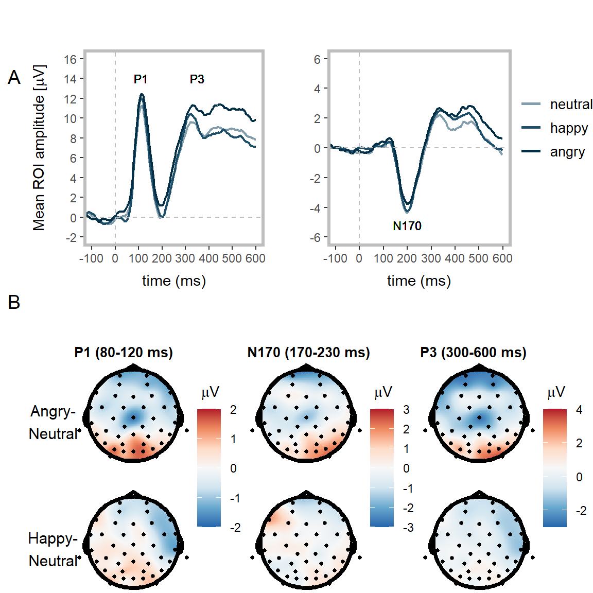
ERP waveforms and topographies at Face 2. Top left: Grand-averaged P1 and P3 waveforms for novel and repeated happy, angry and neutral facial expressions. Shadowed areas indicate the time windows used to identify participants' individual peaks and mean amplitudes. Top right: Grand-averaged P1 amplitudes at Face 2 for repeated and novel happy, angry and neutral facial expressions. Error bars indicate standard errors (SE). Bottom: Topographies of the averaged P1 activity (90-130 ms) displaying difference waves for significant contrasts of the interaction of repetition and facial expression (from the left): novel happy–novel neutral, repeated happy–novel neutral, repeated angry–novel neutral, repeated neutral–novel neutral.
# Load Face 2 data
Face2_data = read.csv("./data/ROI_P1_P3_Face2.csv", header = TRUE)
# De-select participants
Face2_data = Face2_data[with(Face2_data, !(Face2_data$ID == "05")), ]
# Select time window of interest
Face2_data = Face2_data[(Face2_data$Time >= -200) & (Face2_data$Time <= 600), ]
# Rename values of Face2 condition
Face2_data$Condition[Face2_data$Condition == 4] = "rep_happy"
Face2_data$Condition[Face2_data$Condition == 5] = "rep_neutral"
Face2_data$Condition[Face2_data$Condition == 6] = "rep_angry"
Face2_data$Condition[Face2_data$Condition == 7] = "nov_happy"
Face2_data$Condition[Face2_data$Condition == 8] = "nov_neutral"
Face2_data$Condition[Face2_data$Condition == 9] = "nov_angry"
# Plot ERP trajectory for P1/P3
Face2_data_icc = Face2_data[(Face2_data$Condition == "rep_happy") | (Face2_data$Condition ==
"rep_neutral") | (Face2_data$Condition == "rep_angry") | (Face2_data$Condition ==
"nov_happy") | (Face2_data$Condition == "nov_angry") | (Face2_data$Condition ==
"nov_neutral"), ]
P1_cat_all_traj = ggplot(Face2_data_icc, aes(Time, ROI_Average)) + theme(panel.background = element_blank(),
panel.border = element_rect(colour = "grey", fill = NA, size = 2), axis.title.y = element_text(size = 8,
margin = margin(t = 0, r = 0, b = 0, l = 0)), axis.title.x = element_text(size = 8,
margin = margin(t = 0, r = 0, b = 0, l = 0)), axis.text = element_text(size = 8),
legend.position = "none", legend.title = element_blank()) + stat_summary(fun.y = mean,
geom = "line", size = 0.4, aes(linetype = Condition, colour = Condition)) + scale_linetype_manual(values = c("dotted",
"longdash", "solid", "dotted", "longdash", "solid")) + scale_colour_manual(values = c("#2FA9F5",
"#2FA9F5", "#2FA9F5", "#134462", "#134462", "#134462")) + # ggtitle('P1 & P3') +
labs(x = "\nTime [ms]", y = expression(paste("Amplitude [", mu, "V]")), colour = "") +
coord_cartesian(ylim = c(-2, 18), xlim = c(-100, 600)) + scale_y_continuous(breaks = seq(-2,
18, 4)) + scale_x_continuous(breaks = seq(-100, 600, 200)) + geom_vline(xintercept = 0,
linetype = "dashed", colour = "grey") + geom_hline(yintercept = 0, linetype = "dashed",
colour = "grey") + annotate("rect", xmin = 90, xmax = 130, ymin = -2.5, ymax = 18.5,
alpha = 0.3) + annotate("rect", xmin = 300, xmax = 500, ymin = -2.5, ymax = 18.5,
alpha = 0.3)
load.Rdata(filename = "./data/ERP_data.Rdata", "ERPs")
## Select data
ERPs_sel = subset(ERPs, Exclude_smaller_250ms == FALSE & Exclude_larger_7s == FALSE &
Exclude_MAD == FALSE & Response == 1 & Group_pcic == 2 | Group_pcic == 3)
# Rename values of Face2 condition
ERPs_sel$Condition[ERPs_sel$Condition == 4] = "happy"
ERPs_sel$Condition[ERPs_sel$Condition == 5] = "neutral"
ERPs_sel$Condition[ERPs_sel$Condition == 6] = "angry"
ERPs_sel$Condition[ERPs_sel$Condition == 7] = "happy"
ERPs_sel$Condition[ERPs_sel$Condition == 8] = "neutral"
ERPs_sel$Condition[ERPs_sel$Condition == 9] = "angry"
# Rename variables
ERPs_sel$Group_pcic[ERPs_sel$Group_pcic == 2] = "repeated"
ERPs_sel$Group_pcic[ERPs_sel$Group_pcic == 3] = "novel"
# Summarize data
stats_P1_all = summarySEwithin(ERPs_sel, measurevar = "mean_ROI_P1", withinvars = c("Group_pcic",
"Condition"), idvar = "ID")
# Plot
P1_plot = ggplot(stats_P1_all, aes(x = Condition, y = mean_ROI_P1, fill = Group_pcic)) +
geom_bar(position = position_dodge(), stat = "identity", color = "black", size = 0.5,
width = 0.9) + geom_errorbar(aes(ymin = mean_ROI_P1 - se, ymax = mean_ROI_P1 +
se), size = 0.5, width = 0.2, position = position_dodge(0.9)) + labs(x = "",
y = expression(paste("Amplitude [", mu, "V]")), colour = "") + scale_fill_manual(values = nov_col) +
coord_cartesian(ylim = c(0, 20)) + scale_y_continuous(breaks = seq(0, 25, 5)) +
theme_bw() + theme_SN + theme(legend.position = "left", legend.direction = "vertical",
legend.key.size = unit(1, "cm"), legend.key.width = unit(0.5, "cm"), legend.text = element_text(size = 7),
text = element_text(size = 8), legend.title = element_blank(), axis.title.y = element_text(size = 8,
margin = margin(t = 0, r = 20, b = 0, l = 0)))
# Put plots together
plots_EEG_F2 = cowplot::plot_grid(P1_cat_all_traj + theme(legend.position = "none"),
legend_ERP, align = "vh", hjust = -1, nrow = 1, rel_widths = c(1, 0.3))
legend_behav = get_legend(P1_plot)
plots_EEG_F2_2 = cowplot::plot_grid(legend_behav, P1_plot + theme(legend.position = "none"),
align = "vh", hjust = -1, nrow = 1, rel_widths = c(0.4, 1))
# Display plot https://wilkelab.org/cowplot/articles/shared_legends.html
fig_rep_ERP = cowplot::plot_grid(plots_EEG_F2, plots_EEG_F2_2, rel_widths = c(0.7,
0.6))
# Get topographies
Topo_Cat = read.csv(file = "./data/ERPs_Topo_Face2.csv", header = TRUE, sep = ",")
# Remove participant 5
Topo_Cat = Topo_Cat[with(Topo_Cat, !(Topo_Cat$ID == 5)), ]
# Re-name to fit topoplot function
names(Topo_Cat)[names(Topo_Cat) == "Time"] = "time"
# Change from wide to long format for electrodes
Topo_Cat = gather(Topo_Cat, electrode, amplitude, Fp1:Oz, factor_key = TRUE)
# Rename A1/A2
names(Topo_Cat)[names(Topo_Cat) == "A1"] = "TP9"
names(Topo_Cat)[names(Topo_Cat) == "A2"] = "TP10"
# Plot topoplots for repeated / novel emotion trials
Topo_Cat_rep_hap = subset(Topo_Cat, Condition == 4)
Topo_Cat_rep_neu = subset(Topo_Cat, Condition == 5)
Topo_Cat_rep_ang = subset(Topo_Cat, Condition == 6)
Topo_Cat_nov_hap = subset(Topo_Cat, Condition == 7)
Topo_Cat_nov_neu = subset(Topo_Cat, Condition == 8)
# Calculate difference scores for different contrasts
Topo_Diff_nov_hap_neu = data.frame(ID = Topo_Cat_rep_hap[, 1], time = Topo_Cat_rep_hap[,
3], electrode = Topo_Cat_rep_hap[, 4], amplitude = Topo_Cat_nov_hap$amplitude -
Topo_Cat_nov_neu$amplitude)
Topo_Diff_rep_hap_nov_neu = data.frame(ID = Topo_Cat_rep_hap[, 1], time = Topo_Cat_rep_hap[,
3], electrode = Topo_Cat_rep_hap[, 4], amplitude = Topo_Cat_rep_hap$amplitude -
Topo_Cat_nov_neu$amplitude)
Topo_Diff_rep_ang_nov_neu = data.frame(ID = Topo_Cat_rep_hap[, 1], time = Topo_Cat_rep_hap[,
3], electrode = Topo_Cat_rep_hap[, 4], amplitude = Topo_Cat_rep_ang$amplitude -
Topo_Cat_nov_neu$amplitude)
Topo_Diff_rep_neu_nov_neu = data.frame(ID = Topo_Cat_rep_hap[, 1], time = Topo_Cat_rep_hap[,
3], electrode = Topo_Cat_rep_hap[, 4], amplitude = Topo_Cat_rep_neu$amplitude -
Topo_Cat_nov_neu$amplitude)
## P1
# Select time windows
Topo_Diff_nov_hap_neu_P1 = subset(Topo_Diff_nov_hap_neu, time >= 90 & time <= 130)
Topo_Diff_rep_hap_nov_neu_P1 = subset(Topo_Diff_rep_hap_nov_neu, time >= 90 & time <=
130)
Topo_Diff_rep_ang_nov_neu_P1 = subset(Topo_Diff_rep_ang_nov_neu, time >= 90 & time <=
130)
Topo_Diff_rep_neu_nov_neu_P1 = subset(Topo_Diff_rep_neu_nov_neu, time >= 90 & time <=
130)
# Add electrode information
Topo_Diff_nov_hap_neu_P1 = electrode_locations(Topo_Diff_nov_hap_neu_P1, electrode = "electrode",
drop = FALSE, montage = NULL)
Topo_Diff_rep_hap_nov_neu_P1 = electrode_locations(Topo_Diff_rep_hap_nov_neu_P1,
electrode = "electrode", drop = FALSE, montage = NULL)
Topo_Diff_rep_ang_nov_neu_P1 = electrode_locations(Topo_Diff_rep_ang_nov_neu_P1,
electrode = "electrode", drop = FALSE, montage = NULL)
Topo_Diff_rep_neu_nov_neu_P1 = electrode_locations(Topo_Diff_rep_neu_nov_neu_P1,
electrode = "electrode", drop = FALSE, montage = NULL)
# Create topographies
topo_diff_nov_hap_neu_P1 = ggplot(Topo_Diff_nov_hap_neu_P1, aes(x = x, y = y, fill = amplitude,
label = electrode)) + ggtitle("nov. hap. – nov. neu.") + geom_topo(grid_res = 300,
interp_limit = "head", chan_markers = "point", chan_size = 0.6, head_size = 0.9) +
scale_fill_distiller(palette = "RdBu", limits = c(-2.5, 3.5)) + theme_void() +
coord_equal() + labs(fill = expression(paste("Amplitude (", mu, "V)"))) + theme(legend.position = "none",
plot.title = element_text(size = 8, face = "bold", hjust = 0.5))
topo_diff_rep_hap_nov_neu_P1 = ggplot(Topo_Diff_rep_hap_nov_neu_P1, aes(x = x, y = y,
fill = amplitude, label = electrode)) + ggtitle("rep. hap. – nov. neu.") + geom_topo(grid_res = 300,
interp_limit = "head", chan_markers = "point", chan_size = 0.6, head_size = 0.9) +
scale_fill_distiller(palette = "RdBu", limits = c(-2.5, 3.5)) + theme_void() +
coord_equal() + labs(fill = expression(paste("Amplitude (", mu, "V)"))) + theme(legend.position = "none",
plot.title = element_text(size = 8, face = "bold", hjust = 0.5))
topo_diff_rep_ang_nov_neu_P1 = ggplot(Topo_Diff_rep_ang_nov_neu_P1, aes(x = x, y = y,
fill = amplitude, label = electrode)) + ggtitle("rep. ang. – nov. neu.") + geom_topo(grid_res = 300,
interp_limit = "head", chan_markers = "point", chan_size = 0.6, head_size = 0.9) +
scale_fill_distiller(palette = "RdBu", limits = c(-2.5, 3.5)) + theme_void() +
coord_equal() + labs(fill = expression(paste("Amplitude (", mu, "V)"))) + theme(legend.position = "none",
plot.title = element_text(size = 8, face = "bold", hjust = 0.5))
topo_diff_rep_neu_nov_neu_P1 = ggplot(Topo_Diff_rep_neu_nov_neu_P1, aes(x = x, y = y,
fill = amplitude, label = electrode)) + ggtitle("rep. neu. – nov. neu.") + geom_topo(grid_res = 300,
interp_limit = "head", chan_markers = "point", chan_size = 0.6, head_size = 0.9) +
scale_fill_distiller(palette = "RdBu", limits = c(-2.5, 3.5)) + theme_void() +
coord_equal() + labs(fill = expression(paste("Amplitude (", mu, "V)"))) + theme(legend.position = "none",
plot.title = element_text(size = 8, face = "bold", hjust = 0.5))
# Get topography legend
topo_diff_nov_hap_neu_P1_leg = ggplot(Topo_Diff_nov_hap_neu_P1, aes(x = x, y = y,
fill = amplitude, label = electrode)) + ggtitle("P1 (90-130 ms)") + geom_topo(grid_res = 300,
interp_limit = "head", chan_markers = "point", chan_size = 0.6, head_size = 0.9) +
scale_fill_distiller(palette = "RdBu", limits = c(-2.5, 3.5)) + theme_void() +
coord_equal() + labs(fill = expression(paste("", mu, "V"))) + theme(legend.position = "right",
legend.title = element_text(size = 8), legend.text = element_text(size = 7),
legend.key.size = unit(0.4, "cm"))
## Display plots https://wilkelab.org/cowplot/articles/shared_legends.html
topo_leg = get_legend(topo_diff_nov_hap_neu_P1_leg)
fig_Face_2_topo = cowplot::plot_grid(topo_diff_nov_hap_neu_P1, topo_diff_rep_hap_nov_neu_P1,
topo_diff_rep_ang_nov_neu_P1, topo_diff_rep_neu_nov_neu_P1, topo_leg, ncol = 5)
fig_Face2_cat = cowplot::plot_grid(fig_rep_ERP, fig_Face_2_topo, nrow = 2, rel_heights = c(2,
1), align = "v")
fig_Face2_cat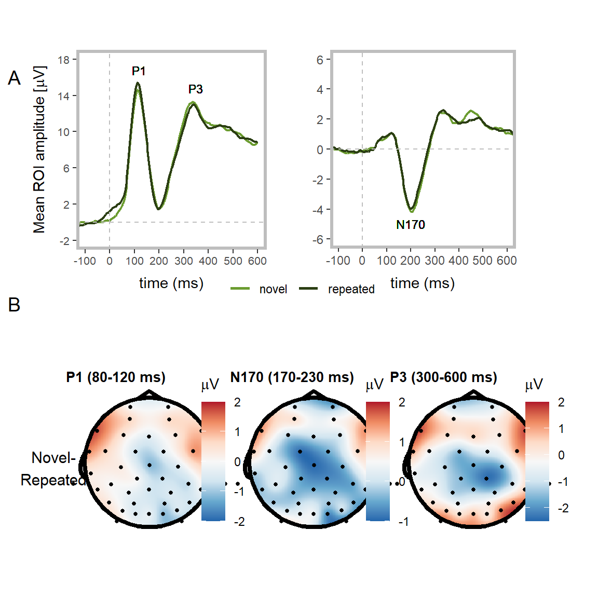
Model specification
- _val = ERP LMMs for Face 1
- _rep = ERP LMMs for Face 2
LMM_P1_val: Random effect structure
# Select Face 1
P1_Val = subset(ERP_data, Group_pt == 1)
# Prepare fixed factors
P1_Val$ID = as.factor(P1_Val$ID)
P1_Val$Stim_Type = as.factor(P1_Val$Stim_Type)
# Re-code emotion condition
P1_Val$Condition[P1_Val$Condition == 1] = "happy"
P1_Val$Condition[P1_Val$Condition == 2] = "neutral"
P1_Val$Condition[P1_Val$Condition == 3] = "angry"
# Create factor & set neutral as baseline
P1_Val$Condition = factor(P1_Val$Condition)
contrasts(P1_Val$Condition) = contr.treatment(3, base = 3)
# A = angry, N = neutral, H = happy
HvsA = c(0.5, -0.5, 0)
EvsN = c(0.5, 0.5, 0)
contrasts(P1_Val$Condition) = cbind(EvsN, HvsA)
# Add contrast columns
mm_P1_Val = model.matrix(~Condition, P1_Val)
# Attach to dataframe
P1_Val[, (ncol(P1_Val) + 1):(ncol(P1_Val) + 3)] = mm_P1_Val
names(P1_Val)[(ncol(P1_Val) - 2):ncol(P1_Val)] = c("Mean", "Emo_Neu", "Hap_Ang")
# Build model
mod_P1_val.lmer1 = lmer(mean_ROI_P1 ~ Emo_Neu + Hap_Ang + WM_scal + contr_F1_scal +
(1 + Emo_Neu + Hap_Ang || ID) + (1 + Emo_Neu + Hap_Ang || Stim_Type), data = P1_Val,
control = lmerControl(calc.derivs = FALSE))
# 1st: check how many zero variance terms you got in random effects
summary(rePCA(mod_P1_val.lmer1))
# 2nd: check which random terms explain the least variance
print(VarCorr(mod_P1_val.lmer1), comp = "Variance")
# Remove intercepts/slopes based on variance check
mod_P1_val.lmer2 = lmer(mean_ROI_P1 ~ Emo_Neu + Hap_Ang + WM_scal + contr_F1_scal +
(1 + Hap_Ang || ID) + (0 + Emo_Neu + Hap_Ang || Stim_Type), data = P1_Val, control = lmerControl(calc.derivs = FALSE))
# Re-check the model
summary(rePCA(mod_P1_val.lmer2))
print(VarCorr(mod_P1_val.lmer2), comp = "Variance")
# Likelihood ratio testing
# For ID
mod_P1_val.lmer3 = lmer(mean_ROI_P1 ~ Emo_Neu + Hap_Ang + WM_scal + contr_F1_scal +
(1 | ID) + (0 + Emo_Neu + Hap_Ang || Stim_Type), data = P1_Val, control = lmerControl(calc.derivs = FALSE))
# Calculate ANOVA
anova(mod_P1_val.lmer2, mod_P1_val.lmer3)
# Stimulus type
mod_P1_val.lmer4 = lmer(mean_ROI_P1 ~ Emo_Neu + Hap_Ang + WM_scal + contr_F1_scal +
(1 + Hap_Ang || ID) + (1 | Stim_Type), data = P1_Val, control = lmerControl(calc.derivs = FALSE))
# Calculate ANOVA
anova(mod_P1_val.lmer2, mod_P1_val.lmer4)
# Without Stimulus type
mod_P1_val.lmer4 = lmer(mean_ROI_P1 ~ Emo_Neu + Hap_Ang + WM_scal + contr_F1_scal +
(1 | ID), data = P1_Val, control = lmerControl(calc.derivs = FALSE))
# Calculate ANOVA
anova(mod_P1_val.lmer2, mod_P1_val.lmer4)
# Final model
mod_P1_val.lmer4 = lmer(mean_ROI_P1 ~ Emo_Neu + Hap_Ang + WM_scal + contr_F1_scal +
(1 | ID), data = P1_Val, control = lmerControl(calc.derivs = FALSE))The final model was comprised of:
mean_ROI_P1 ~ Emo_Neu + Hap_Ang + WM_scal + contr_F1_scal + (1 | , ID)
LMM_P1_val: Normality of residuals
# Set treatment contrast
contrasts(P1_Val$Condition) = contr.treatment(3)
## Check properties of DV / residuals
P1_Val$Trans_P1 = P1_Val$mean_ROI_P1 + 1 - min(P1_Val$mean_ROI_P1)
# To make sure residuals follow ND: Calculate box-cox plot
boxcox(P1_Val$Trans_P1 ~ P1_Val$Condition)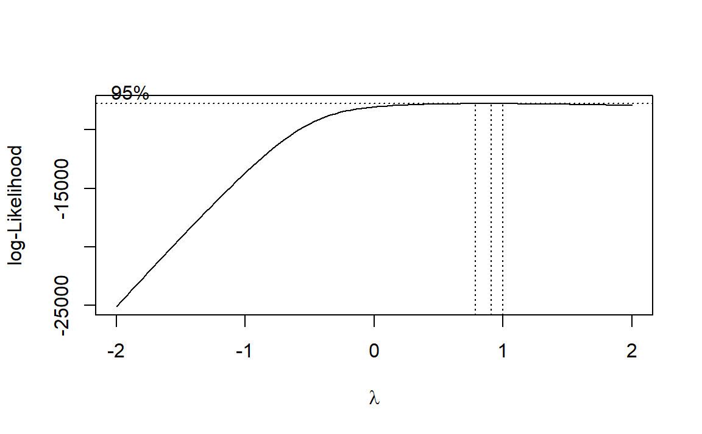
P1 amplitudes met the assumption of normally distributed residuals.
# Visualize normality assumption of residuals (without log transform)
mod_P1_val = lm(Trans_P1 ~ Condition, data = P1_Val)
res.mod_P1_val = residuals(mod_P1_val)
par(mfrow = c(1, 2))
qqpl_mod_P1_val = qqPlot(res.mod_P1_val, main = "QQplot before transformation")
norm_mod_P1_val = plot(density(res.mod_P1_val), main = "Density plot before transformation")
par(mfrow = c(1, 1))LMM_P1_val: Homoscedasticity
# Check homoscedasticity
plot(fitted(mod_P1_val.lmer4), residuals(mod_P1_val.lmer4))
abline(0, 0)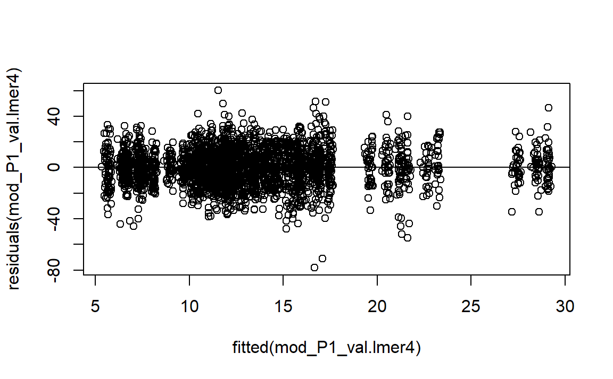
Based on visual inspection, we assumed homoscedasticity.
LMM_N170_val: Random effect structure
# Transform dataset so that left/right hemisphere are accounted for
N170_Val = gather(ERP_data, Elect_site, N170_Amplitude, mean_ROI_N170l:mean_ROI_N170r,
factor_key = TRUE)
# Add variable name
N170_Val$Elect_site = as.character(N170_Val$Elect_site)
N170_Val$Elect_site[N170_Val$Elect_site == "mean_ROI_N170l"] = "left"
N170_Val$Elect_site[N170_Val$Elect_site == "mean_ROI_N170r"] = "right"
# Prepare fixed factors
N170_Val$ID = as.factor(N170_Val$ID)
N170_Val$Stim_Type = as.factor(N170_Val$Stim_Type)
N170_Val$Elect_site = factor(N170_Val$Elect_site)
# Select primes
N170_Val = subset(N170_Val, Group_pt == 1)
# Re-code values for emotion variable
N170_Val$Condition[N170_Val$Condition == 1] = "happy"
N170_Val$Condition[N170_Val$Condition == 2] = "neutral"
N170_Val$Condition[N170_Val$Condition == 3] = "angry"
# Create factor, get neutral as baseline
N170_Val$Condition = factor(N170_Val$Condition)
# Set treatment contrasts
contrasts(N170_Val$Condition) = contr.treatment(3, base = 3)
# A = angry, N = neutral, H = happy
HvsA = c(0.5, -0.5, 0)
EvsN = c(0.5, 0.5, 0)
contrasts(N170_Val$Condition) = cbind(EvsN, HvsA)
# Add contrast columns
mm_N170_Val = model.matrix(~Condition + Elect_site, N170_Val)
# Attach to dataframe
N170_Val[, (ncol(N170_Val) + 1):(ncol(N170_Val) + 4)] = mm_N170_Val
names(N170_Val)[(ncol(N170_Val) - 3):ncol(N170_Val)] = c("Mean", "Emo_Neu", "Hap_Ang",
"Elect_site")
# Get model
mod_N170_val.lmer1 = lmer(N170_Amplitude ~ Emo_Neu + Hap_Ang + Elect_site + WM_scal +
contr_F1_scal + (1 + Emo_Neu + Hap_Ang + Elect_site || ID) + (1 + Emo_Neu + Hap_Ang +
Elect_site || Stim_Type), data = N170_Val, control = lmerControl(calc.derivs = FALSE))
# 1st: check how many zero variance terms you got in random effects
summary(rePCA(mod_N170_val.lmer1))
# 2nd: check which random terms explain the least variance
print(VarCorr(mod_N170_val.lmer1), comp = "Variance")
# Improved model
mod_N170_val.lmer2 = lmer(N170_Amplitude ~ Emo_Neu + Hap_Ang + Elect_site + WM_scal +
contr_F1_scal + (1 | ID) + (0 + Elect_site || Stim_Type), data = N170_Val, control = lmerControl(calc.derivs = FALSE))
# 1st: check how many zero variance terms you got in random effects
summary(rePCA(mod_N170_val.lmer2))
# 2nd: check which random terms explain the least variance
print(VarCorr(mod_N170_val.lmer2), comp = "Variance")
# Likelihood-testing
mod_N170_val.lmer3 = lmer(N170_Amplitude ~ Emo_Neu + Hap_Ang + Elect_site + WM_scal +
contr_F1_scal + (1 | ID) + (1 | Stim_Type), data = N170_Val, control = lmerControl(calc.derivs = FALSE))
mod_N170_val.lmer4 = lmer(N170_Amplitude ~ Emo_Neu + Hap_Ang + Elect_site + WM_scal +
contr_F1_scal + (1 | ID), data = N170_Val, control = lmerControl(calc.derivs = FALSE))
anova(mod_N170_val.lmer2, mod_N170_val.lmer3)
anova(mod_N170_val.lmer2, mod_N170_val.lmer4)
# Final model
mod_N170_val.lmer2 = lmer(N170_Amplitude ~ Emo_Neu + Hap_Ang + Elect_site + WM_scal +
contr_F1_scal + (1 | ID), data = N170_Val, control = lmerControl(calc.derivs = FALSE))
The final model was comprised of:
N170_Amplitude ~ Emo_Neu + Hap_Ang + Elect_site + WM_scal + contr_F1_scal + , (1 | ID)
LMM_N170_val: Normality of residuals
## Check properties of DV / residuals
N170_Val$Trans_N170 = N170_Val$N170_Amplitude + 1 - min(N170_Val$N170_Amplitude)
# To make sure residuals follow ND: Calculate box-cox plot
boxcox(N170_Val$Trans_N170 ~ N170_Val$Condition)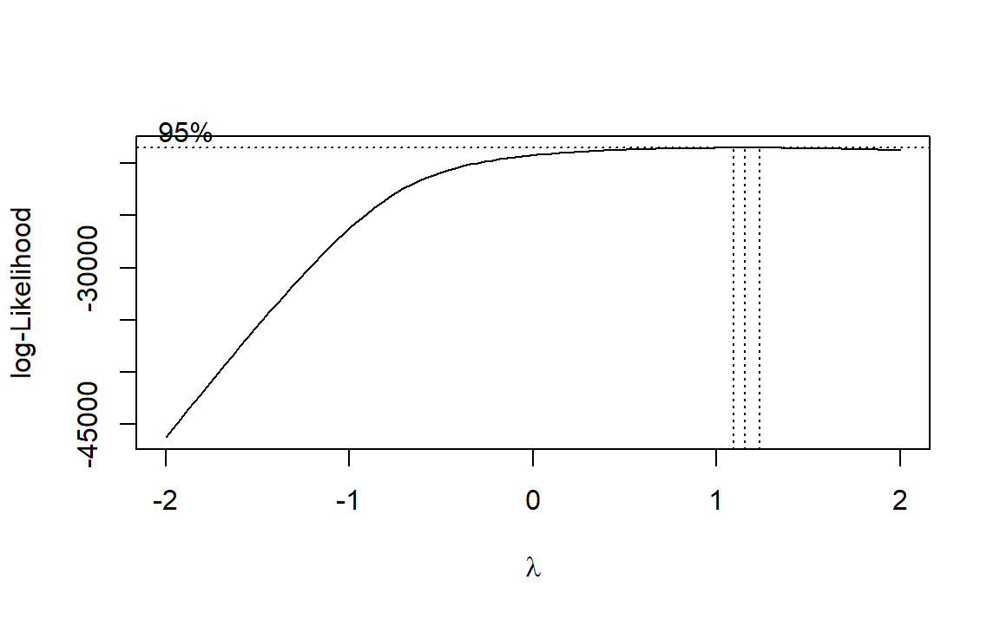
N170 amplitudes met the assumption of normally distributed residuals.
# Visualize normality assumption of residuals (without log transform)
mod_N170_val = lm(Trans_N170 ~ Condition, data = N170_Val)
res.mod_N170_val = residuals(mod_N170_val)
par(mfrow = c(1, 2))
qqpl_mod_N170_val = qqPlot(res.mod_N170_val, main = "QQplot before transformation")
norm_mod_N170_val = plot(density(res.mod_N170_val), main = "Density plot before transformation")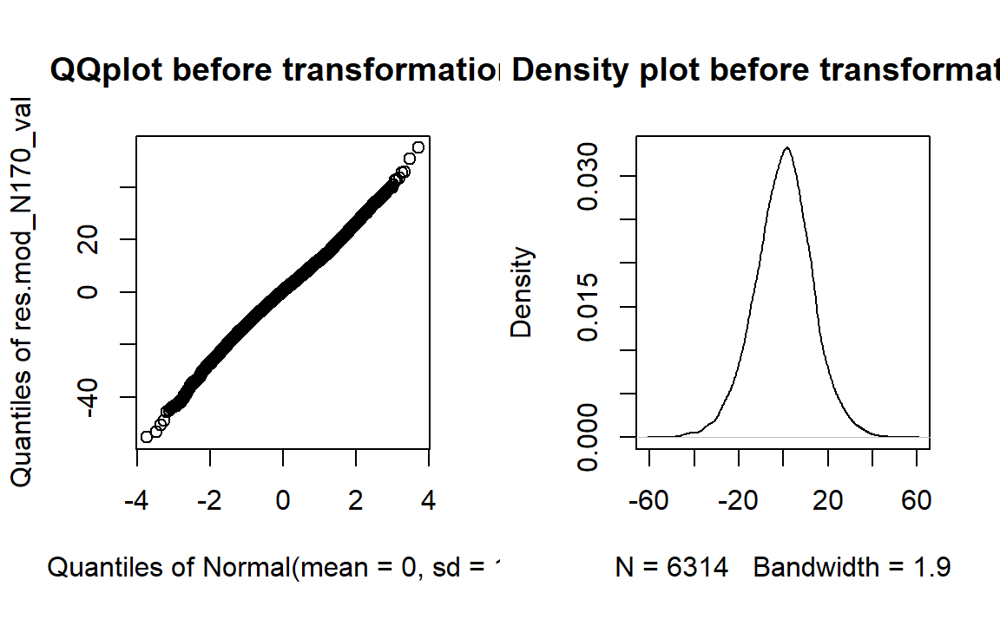
par(mfrow = c(1, 1))LMM_N170_val: Homoscedasticity
# Check homoscedasticity
plot(fitted(mod_N170_val.lmer2), residuals(mod_N170_val.lmer2))
abline(0, 0)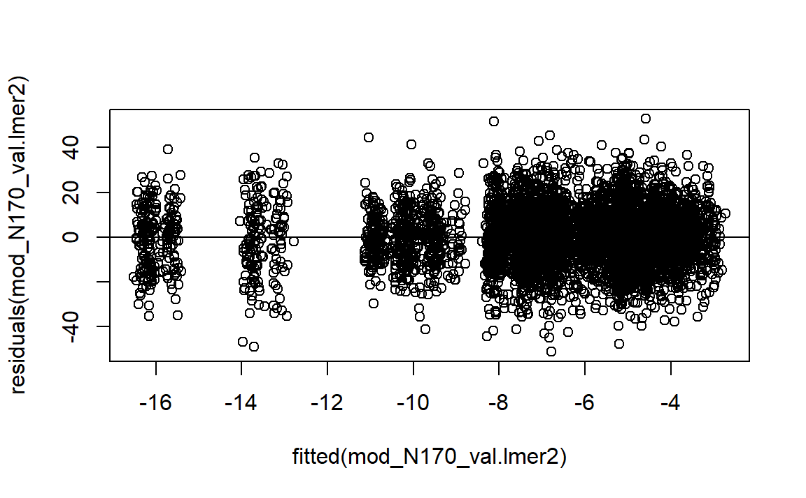
Based on visual inspection, we assumed homoscedasticity.
LMM_P3_val: Random effect structure
# Select primes
P3_Val = subset(ERP_data, Group_pt == 1)
# Prepare fixed factors
P3_Val$ID = as.factor(P3_Val$ID)
P3_Val$Stim_Type = as.factor(P3_Val$Stim_Type)
# Re-Name values of emotion condition
P3_Val$Condition[P3_Val$Condition == 1] = "happy"
P3_Val$Condition[P3_Val$Condition == 2] = "neutral"
P3_Val$Condition[P3_Val$Condition == 3] = "angry"
# Create factor & set neutral as baseline
P3_Val$Condition = factor(P3_Val$Condition)
contrasts(P3_Val$Condition) = contr.treatment(3, base = 3)
# A = angry, N = neutral, H = happy
HvsA = c(0.5, -0.5, 0)
EvsN = c(0.5, 0.5, 0)
contrasts(P3_Val$Condition) = cbind(EvsN, HvsA)
# Add contrast columns
mm_P3_Val = model.matrix(~Condition, P3_Val)
# Attach to dataframe
P3_Val[, (ncol(P3_Val) + 1):(ncol(P3_Val) + 3)] = mm_P3_Val
names(P3_Val)[(ncol(P3_Val) - 2):ncol(P3_Val)] = c("Mean", "Hap_Ang", "Emo_Neu")
# Build model
mod_P3_val.lmer1 = lmer(mean_ROI_P3 ~ Emo_Neu + Hap_Ang + WM_scal + contr_F1_scal +
(1 + Emo_Neu + Hap_Ang || ID) + (1 + Emo_Neu + Hap_Ang || Stim_Type), data = P3_Val,
control = lmerControl(calc.derivs = FALSE))
# 1st: check how many zero variance terms you got in random effects
summary(rePCA(mod_P3_val.lmer1))
# 2nd: check which random terms explain the least variance
print(VarCorr(mod_P3_val.lmer1), comp = "Variance")
# Improved model
mod_P3_val.lmer2 = lmer(mean_ROI_P3 ~ Emo_Neu + Hap_Ang + WM_scal + contr_F1_scal +
(1 | ID) + (1 + Emo_Neu + Hap_Ang || Stim_Type), data = P3_Val, control = lmerControl(calc.derivs = FALSE))
# Re-check the model
summary(rePCA(mod_P3_val.lmer2))
print(VarCorr(mod_P3_val.lmer2), comp = "Variance")
# Likelihood ratio testing
# Stimulus type
mod_P3_val.lmer3 = lmer(mean_ROI_P3 ~ Emo_Neu + Hap_Ang + WM_scal + contr_F1_scal +
(1 | ID) + (1 | Stim_Type), data = P3_Val, control = lmerControl(calc.derivs = FALSE))
# Calculate ANOVA
anova(mod_P3_val.lmer2, mod_P3_val.lmer3)
# Final model
mod_P3_val.lmer4 = lmer(mean_ROI_P3 ~ Emo_Neu + Hap_Ang + WM_scal + contr_F1_scal +
(1 | ID) + (1 | Stim_Type), data = P3_Val, control = lmerControl(calc.derivs = FALSE))The final model was comprised of:
mean_ROI_P3 ~ Emo_Neu + Hap_Ang + WM_scal + contr_F1_scal + (1 | , ID) + (1 | Stim_Type)
LMM_P3_val: Normality of residuals
## Check properties of DV / residuals
P3_Val$Trans_P3 = P3_Val$mean_ROI_P3 + 1 - min(P3_Val$mean_ROI_P3)
# To make sure residuals follow ND: Calculate box-cox plot
boxcox(P3_Val$Trans_P3 ~ P3_Val$Condition)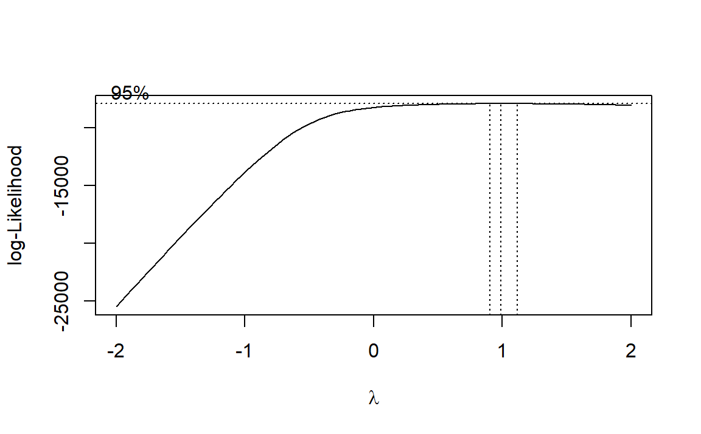
P3 amplitudes met the assumption of normally distributed residuals.
# Visualize normality assumption of residuals (without log transform)
mod_P3_val = lm(Trans_P3 ~ Condition, data = P3_Val)
res.mod_P3_val = residuals(mod_P3_val)
par(mfrow = c(1, 2))
qqpl_mod_P3_val = qqPlot(res.mod_P3_val, main = "QQplot before transformation")
norm_mod_P3_val = plot(density(res.mod_P3_val), main = "Density plot before transformation")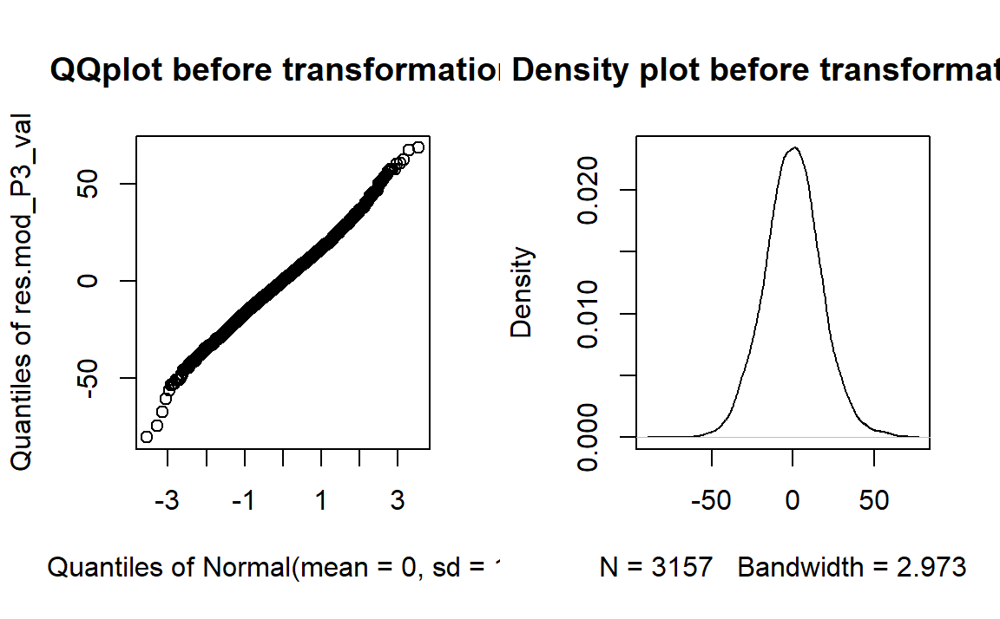
par(mfrow = c(1, 1))LMM_P3_val: Homoscedasticity
# Check homoscedasticity
plot(fitted(mod_P3_val.lmer4), residuals(mod_P3_val.lmer4))
abline(0, 0)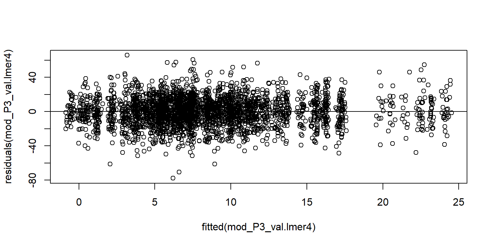
Based on visual inspection, we assumed homoscedasticity.
LMM_P1_rep: Random effect structure
The final model was comprised of:
# Select correct responses and outlier-free data
P1_Cat = subset(ERP_data, Response == 1)
P1_Cat = subset(P1_Cat, Exclude_smaller_250ms == FALSE & Exclude_larger_7s == FALSE &
Exclude_MAD == FALSE)
# Select targets
P1_Cat = subset(P1_Cat, Group_pt == 2)
# Prepare fixed factors
P1_Cat$ID = as.factor(P1_Cat$ID)
P1_Cat$Stim_Type = as.factor(P1_Cat$Stim_Type)
# Define novel vs repeated trials
P1_Cat$Condition[P1_Cat$Condition == 4] = "c_happy"
P1_Cat$Condition[P1_Cat$Condition == 5] = "c_neutral"
P1_Cat$Condition[P1_Cat$Condition == 6] = "c_angry"
P1_Cat$Condition[P1_Cat$Condition == 7] = "ic_happy"
P1_Cat$Condition[P1_Cat$Condition == 8] = "ic_neutral"
P1_Cat$Condition[P1_Cat$Condition == 9] = "ic_angry"
# Create one variable for emotion and one for repetition
P1_Cat$emot[(P1_Cat$Condition == "c_happy") | (P1_Cat$Condition == "ic_happy")] = 1
P1_Cat$emot[(P1_Cat$Condition == "c_angry") | (P1_Cat$Condition == "ic_angry")] = 2
P1_Cat$emot[(P1_Cat$Condition == "c_neutral") | (P1_Cat$Condition == "ic_neutral")] = 3
P1_Cat$rep[(P1_Cat$Condition == "c_happy") | (P1_Cat$Condition == "c_angry") | (P1_Cat$Condition ==
"c_neutral")] = 1
P1_Cat$rep[(P1_Cat$Condition == "ic_happy") | (P1_Cat$Condition == "ic_angry") |
(P1_Cat$Condition == "ic_neutral")] = 2
# Rename variables
P1_Cat$emot[P1_Cat$emot == 1] = "happy"
P1_Cat$emot[P1_Cat$emot == 2] = "angry"
P1_Cat$emot[P1_Cat$emot == 3] = "neutral"
# Rename variables
P1_Cat$rep[P1_Cat$rep == 1] = "repeated"
P1_Cat$rep[P1_Cat$rep == 2] = "novel"
# Factor and create contrasts
P1_Cat$rep = factor(P1_Cat$rep)
P1_Cat$emot = factor(P1_Cat$emot)
contrasts(P1_Cat$rep) = contr.treatment(2, base = 1)
contrasts(P1_Cat$emot) = contr.treatment(3, base = 3)
# A = angry, N = neutral, H = happy
HvsA = c(0.5, -0.5, 0)
EvsN = c(0.5, 0.5, 0)
contrasts(P1_Cat$emot) = cbind(EvsN, HvsA)
# Add contrast columns
mm_P1_Cat = model.matrix(~emot * rep, P1_Cat)
# Attach to dataframe
P1_Cat[, (ncol(P1_Cat) + 1):(ncol(P1_Cat) + 6)] = mm_P1_Cat
names(P1_Cat)[(ncol(P1_Cat) - 5):ncol(P1_Cat)] = c("Mean", "Emo_Neu", "Hap_Ang",
"Rep_Nov", "Emo_NeuxRep_Nov", "Hap_AngxRep_Nov")
# Build full model
mod_P1_cat.lmer1 = lmer(mean_ROI_P1 ~ Emo_Neu + Hap_Ang + Rep_Nov + Emo_NeuxRep_Nov +
Hap_AngxRep_Nov + WM_scal + contr_F2_scal + (1 + Emo_Neu + Hap_Ang + Rep_Nov +
Emo_NeuxRep_Nov + Hap_AngxRep_Nov || ID) + (1 + Emo_Neu + Hap_Ang + Rep_Nov +
Emo_NeuxRep_Nov + Hap_AngxRep_Nov || Stim_Type), data = P1_Cat, control = lmerControl(calc.derivs = FALSE))
# 1st: check how many zero variance terms you got in random effects
summary(rePCA(mod_P1_cat.lmer1))
# 2nd: check which random terms explain the least variance
print(VarCorr(mod_P1_cat.lmer1), comp = "Variance")
mod_P1_cat.lmer2 = lmer(mean_ROI_P1 ~ Emo_Neu + Hap_Ang + Rep_Nov + Emo_NeuxRep_Nov +
Hap_AngxRep_Nov + WM_scal + contr_F2_scal + (1 + Hap_Ang + Rep_Nov || ID) + (0 +
Rep_Nov + Emo_NeuxRep_Nov || Stim_Type), data = P1_Cat, control = lmerControl(calc.derivs = FALSE))
## Likelihood-ratio testing
# ID
mod_P1_cat.lmer3 = lmer(mean_ROI_P1 ~ Emo_Neu + Hap_Ang + Rep_Nov + Emo_NeuxRep_Nov +
Hap_AngxRep_Nov + WM_scal + contr_F2_scal + (1 | ID) + (0 + Rep_Nov + Emo_NeuxRep_Nov ||
Stim_Type), data = P1_Cat, control = lmerControl(calc.derivs = FALSE))
# Stim_Type
mod_P1_cat.lmer4 = lmer(mean_ROI_P1 ~ Emo_Neu + Hap_Ang + Rep_Nov + Emo_NeuxRep_Nov +
Hap_AngxRep_Nov + WM_scal + contr_F2_scal + (1 + Hap_Ang + Rep_Nov || ID) + (1 |
Stim_Type), data = P1_Cat, control = lmerControl(calc.derivs = FALSE))
# Calculate ANOVA
anova(mod_P1_cat.lmer2, mod_P1_cat.lmer3)
anova(mod_P1_cat.lmer2, mod_P1_cat.lmer4)
# Without Stim_Type
mod_P1_cat.lmer5 = lmer(mean_ROI_P1 ~ Emo_Neu + Hap_Ang + Rep_Nov + Emo_NeuxRep_Nov +
Hap_AngxRep_Nov + WM_scal + contr_F2_scal + (1 | ID), data = P1_Cat, control = lmerControl(calc.derivs = FALSE))
# Calculate ANOVA
anova(mod_P1_cat.lmer2, mod_P1_cat.lmer5)
# Final model
mod_P1_cat.lmer4 = lmer(mean_ROI_P1 ~ Emo_Neu + Hap_Ang + Rep_Nov + Emo_NeuxRep_Nov +
Hap_AngxRep_Nov + WM_scal + contr_F2_scal + (1 | ID), data = P1_Cat, control = lmerControl(calc.derivs = FALSE))mean_ROI_P1 ~ Emo_Neu + Hap_Ang + Rep_Nov + Emo_NeuxRep_Nov + , Hap_AngxRep_Nov + WM_scal + contr_F2_scal + (1 | ID)
LMM_P1_rep: Normality of residuals
## Check properties of DV / residuals
P1_Cat$Trans_P1 = P1_Cat$mean_ROI_P1 + 1 - min(P1_Cat$mean_ROI_P1)
# To make sure residuals follow ND: Calculate box-cox plot
boxcox(P1_Cat$Trans_P1 ~ P1_Cat$Group_pcic)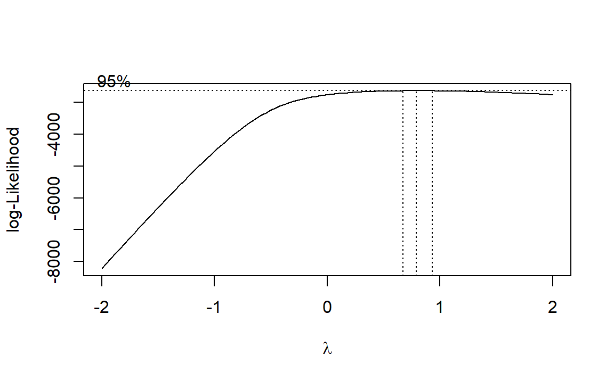
P1 amplitudes met the assumption of normally distributed residuals.
# Visualize normality assumption of residuals (without log transform)
mod_P1_Cat = lm(Trans_P1 ~ Group_pcic, data = P1_Cat)
res.mod_P1_Cat = residuals(mod_P1_Cat)
par(mfrow = c(1, 2))
qqpl_mod_P1_Cat = qqPlot(res.mod_P1_Cat, main = "QQplot before transformation")
norm_mod_P1_Cat = plot(density(res.mod_P1_Cat), main = "Density plot before transformation")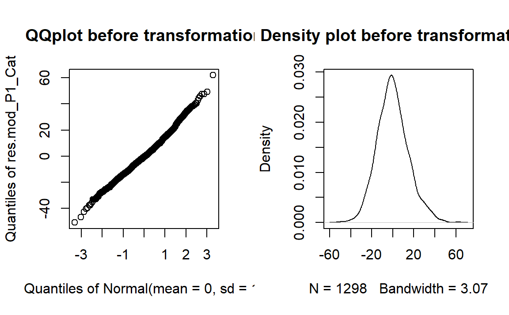
par(mfrow = c(1, 1))LMM_P1_rep: Homoscedasticity
Based on visual inspection, we assumed homoscedasticity.
# Check homoscedasticity
plot(fitted(mod_P1_cat.lmer4), residuals(mod_P1_cat.lmer4))
abline(0, 0)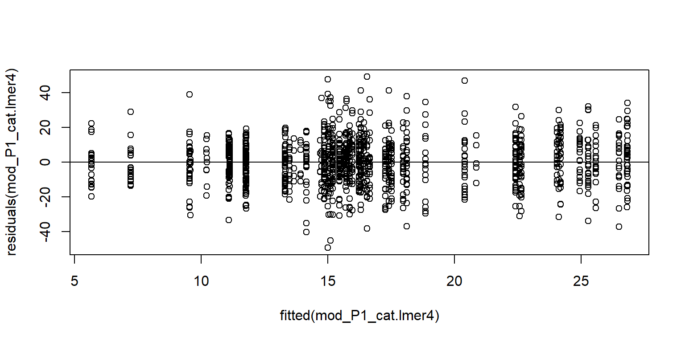
LMM_N170_rep: Random effect structure
The final model was comprised of:
# Select targets
N170_Cat = subset(ERP_data, Group_pt == 2)
# Select correct responses and outlier-free data
N170_Cat = subset(N170_Cat, Response == 1)
N170_Cat = subset(N170_Cat, Exclude_smaller_250ms == FALSE & Exclude_larger_7s ==
FALSE & Exclude_MAD == FALSE)
# Prepare random factors
N170_Cat$ID = as.factor(N170_Cat$ID)
N170_Cat$Stim_Type = as.factor(N170_Cat$Stim_Type)
# Define novel vs repeated trials
N170_Cat$Condition[N170_Cat$Condition == 4] = "c_happy"
N170_Cat$Condition[N170_Cat$Condition == 5] = "c_neutral"
N170_Cat$Condition[N170_Cat$Condition == 6] = "c_angry"
N170_Cat$Condition[N170_Cat$Condition == 7] = "ic_happy"
N170_Cat$Condition[N170_Cat$Condition == 8] = "ic_neutral"
N170_Cat$Condition[N170_Cat$Condition == 9] = "ic_angry"
# Separate data in left and right hemisphere
N170_Cat = gather(N170_Cat, Elect_site, N170_Amplitude, mean_ROI_N170l:mean_ROI_N170r,
factor_key = TRUE)
N170_Cat$Elect_site = as.character(N170_Cat$Elect_site)
# Add variable name
N170_Cat$Elect_site[N170_Cat$Elect_site == "mean_ROI_N170l"] = "left"
N170_Cat$Elect_site[N170_Cat$Elect_site == "mean_ROI_N170r"] = "right"
# Create one variable for emotion and one for repetition
N170_Cat$emot[(N170_Cat$Condition == "c_happy") | (N170_Cat$Condition == "ic_happy")] = 1
N170_Cat$emot[(N170_Cat$Condition == "c_angry") | (N170_Cat$Condition == "ic_angry")] = 2
N170_Cat$emot[(N170_Cat$Condition == "c_neutral") | (N170_Cat$Condition == "ic_neutral")] = 3
N170_Cat$rep[(N170_Cat$Condition == "c_happy") | (N170_Cat$Condition == "c_angry") |
(N170_Cat$Condition == "c_neutral")] = 1
N170_Cat$rep[(N170_Cat$Condition == "ic_happy") | (N170_Cat$Condition == "ic_angry") |
(N170_Cat$Condition == "ic_neutral")] = 2
# Rename variables
N170_Cat$emot[N170_Cat$emot == 1] = "happy"
N170_Cat$emot[N170_Cat$emot == 2] = "angry"
N170_Cat$emot[N170_Cat$emot == 3] = "neutral"
# Rename variables
N170_Cat$rep[N170_Cat$rep == 1] = "repeated"
N170_Cat$rep[N170_Cat$rep == 2] = "novel"
# Factor and create contrasts
N170_Cat$rep = factor(N170_Cat$rep)
N170_Cat$emot = factor(N170_Cat$emot)
contrasts(N170_Cat$rep) = contr.treatment(2, base = 1)
contrasts(N170_Cat$emot) = contr.treatment(3, base = 3)
# A = angry, N = neutral, H = happy
HvsA = c(0.5, -0.5, 0)
EvsN = c(0.5, 0.5, 0)
contrasts(N170_Cat$emot) = cbind(EvsN, HvsA)
# Add contrast columns
mm_N170_Cat = model.matrix(~emot * rep + Elect_site, N170_Cat)
# Attach to dataframe
N170_Cat[, (ncol(N170_Cat) + 1):(ncol(N170_Cat) + 7)] = mm_N170_Cat
names(N170_Cat)[(ncol(N170_Cat) - 6):ncol(N170_Cat)] = c("Mean", "Emo_Neu", "Hap_Ang",
"Rep_Nov", "Emo_NeuxRep_Nov", "Hap_AngxRep_Nov", "Hem")
# Build full model
mod_N170_cat.lmer1 = lmer(N170_Amplitude ~ Emo_Neu + Hap_Ang + Rep_Nov + Emo_NeuxRep_Nov +
Hap_AngxRep_Nov + Hem + WM_scal + contr_F2_scal + (1 + Emo_Neu + Hap_Ang + Rep_Nov +
Emo_NeuxRep_Nov + Hap_AngxRep_Nov + Hem || ID) + (1 + Emo_Neu + Hap_Ang + Rep_Nov +
Emo_NeuxRep_Nov + Hap_AngxRep_Nov + Hem || Stim_Type), data = N170_Cat, control = lmerControl(calc.derivs = FALSE))
# 1st: check how many zero variance terms you got in random effects
summary(rePCA(mod_N170_cat.lmer1))
# 2nd: check which random terms explain the least variance
print(VarCorr(mod_N170_cat.lmer1), comp = "Variance")
# Improved model
mod_N170_cat.lmer2 = lmer(N170_Amplitude ~ Emo_Neu + Hap_Ang + Rep_Nov + Emo_NeuxRep_Nov +
Hap_AngxRep_Nov + Hem + WM_scal + contr_F2_scal + (1 + Emo_NeuxRep_Nov || ID) +
(0 + Hap_Ang + Hem || Stim_Type), data = N170_Cat, control = lmerControl(calc.derivs = FALSE))
# Re-check variances
summary(rePCA(mod_N170_cat.lmer2))
print(VarCorr(mod_N170_cat.lmer2), comp = "Variance")
## Likelihood ratio testing
# ID
mod_N170_cat.lmer3 = lmer(N170_Amplitude ~ Emo_Neu + Hap_Ang + Rep_Nov + Emo_NeuxRep_Nov +
Hap_AngxRep_Nov + Hem + WM_scal + contr_F2_scal + (1 | ID) + (0 + Hap_Ang + Hem ||
Stim_Type), data = N170_Cat, control = lmerControl(calc.derivs = FALSE))
# Stim Type
mod_N170_cat.lmer4 = lmer(N170_Amplitude ~ Emo_Neu + Hap_Ang + Rep_Nov + Emo_NeuxRep_Nov +
Hap_AngxRep_Nov + Hem + WM_scal + contr_F2_scal + (1 + Emo_NeuxRep_Nov || ID) +
(1 | Stim_Type), data = N170_Cat, control = lmerControl(calc.derivs = FALSE))
# Without Stim Type
mod_N170_cat.lmer5 = lmer(N170_Amplitude ~ Emo_Neu + Hap_Ang + Rep_Nov + Emo_NeuxRep_Nov +
Hap_AngxRep_Nov + Hem + WM_scal + contr_F2_scal + (1 | ID), data = N170_Cat,
control = lmerControl(calc.derivs = FALSE))
# Calculate ANOVA
anova(mod_N170_cat.lmer2, mod_N170_cat.lmer3)
anova(mod_N170_cat.lmer2, mod_N170_cat.lmer4)
anova(mod_N170_cat.lmer2, mod_N170_cat.lmer5)
# Final model
mod_N170_cat.lmer4 = mod_N170_cat.lmer4 = lmer(N170_Amplitude ~ Emo_Neu + Hap_Ang +
Rep_Nov + Emo_NeuxRep_Nov + Hap_AngxRep_Nov + Hem + WM_scal + contr_F2_scal +
(1 + Emo_NeuxRep_Nov || ID), data = N170_Cat, control = lmerControl(calc.derivs = FALSE))N170_Amplitude ~ Emo_Neu + Hap_Ang + Rep_Nov + Emo_NeuxRep_Nov + , Hap_AngxRep_Nov + Hem + WM_scal + contr_F2_scal + ((1 | ID) + , (0 + Emo_NeuxRep_Nov | ID))
LMM_N170_rep: Normality of residuals
## Check properties of DV / residuals
N170_Cat$Trans_N170 = N170_Cat$N170_Amplitude + 1 - min(N170_Cat$N170_Amplitude)
# To make sure residuals follow ND: Calculate box-cox plot
boxcox(N170_Cat$Trans_N170 ~ N170_Cat$Group_pcic)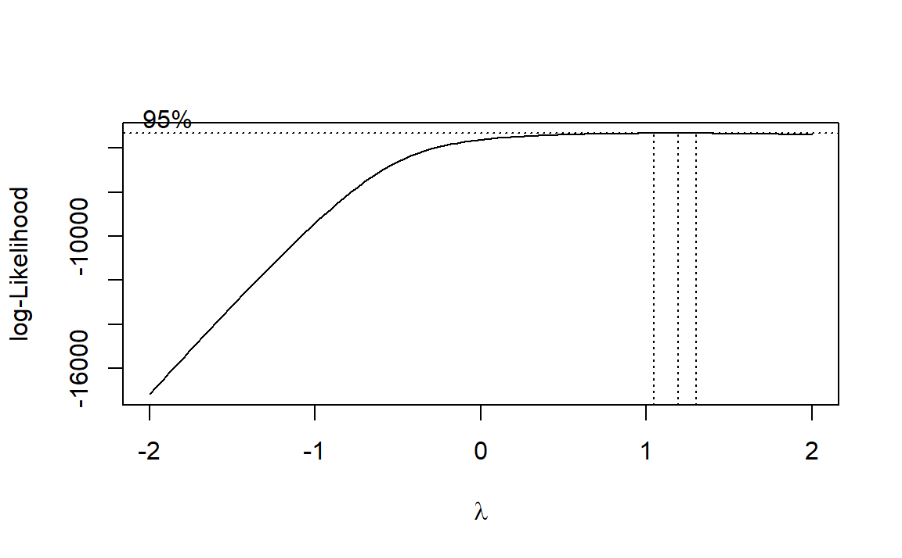
N170 amplitudes met the assumption of normally distributed residuals.
# Visualize normality assumption of residuals (without log transform)
mod_N170_Cat = lm(Trans_N170 ~ Group_pcic, data = N170_Cat)
res.mod_N170_Cat = residuals(mod_N170_Cat)
par(mfrow = c(1, 2))
qqpl_mod_N170_Cat = qqPlot(res.mod_N170_Cat, main = "QQplot before transformation")
norm_mod_N170_Cat = plot(density(res.mod_N170_Cat), main = "Density plot before transformation")
par(mfrow = c(1, 1))LMM_N170_rep: Homoscedasticity
# Check homoscedasticity
plot(fitted(mod_N170_cat.lmer4), residuals(mod_N170_cat.lmer4))
abline(0, 0)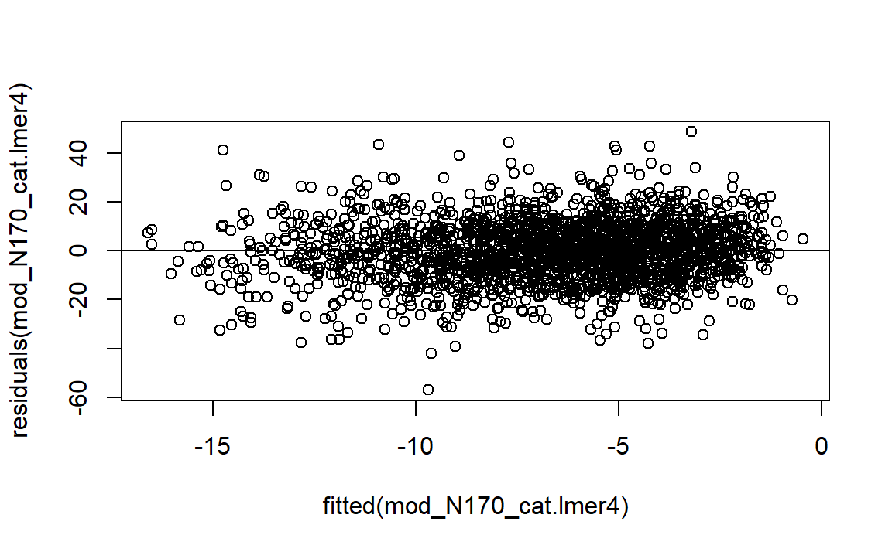
Based on visual inspection, we assumed homoscedasticity.
LMM_P3_rep: Random effect structure
The final model was comprised of:
# Select correct responses and outlier-free data
P3_Cat = subset(ERP_data, Response == 1)
P3_Cat = subset(P3_Cat, Exclude_smaller_250ms == FALSE & Exclude_larger_7s == FALSE &
Exclude_MAD == FALSE)
# Select targets
P3_Cat = subset(P3_Cat, Group_pt == 2)
# Prepare fixed factors
P3_Cat$ID = as.factor(P3_Cat$ID)
P3_Cat$Stim_Type = as.factor(P3_Cat$Stim_Type)
# Define novel vs repeated trials
P3_Cat$Condition[P3_Cat$Condition == 4] = "c_happy"
P3_Cat$Condition[P3_Cat$Condition == 5] = "c_neutral"
P3_Cat$Condition[P3_Cat$Condition == 6] = "c_angry"
P3_Cat$Condition[P3_Cat$Condition == 7] = "ic_happy"
P3_Cat$Condition[P3_Cat$Condition == 8] = "ic_neutral"
P3_Cat$Condition[P3_Cat$Condition == 9] = "ic_angry"
# Create one variable for emotion and one for repetition
P3_Cat$emot[(P3_Cat$Condition == "c_happy") | (P3_Cat$Condition == "ic_happy")] = 1
P3_Cat$emot[(P3_Cat$Condition == "c_angry") | (P3_Cat$Condition == "ic_angry")] = 2
P3_Cat$emot[(P3_Cat$Condition == "c_neutral") | (P3_Cat$Condition == "ic_neutral")] = 3
P3_Cat$rep[(P3_Cat$Condition == "c_happy") | (P3_Cat$Condition == "c_angry") | (P3_Cat$Condition ==
"c_neutral")] = 1
P3_Cat$rep[(P3_Cat$Condition == "ic_happy") | (P3_Cat$Condition == "ic_angry") |
(P3_Cat$Condition == "ic_neutral")] = 2
# Rename variables
P3_Cat$emot[P3_Cat$emot == 1] = "happy"
P3_Cat$emot[P3_Cat$emot == 2] = "angry"
P3_Cat$emot[P3_Cat$emot == 3] = "neutral"
P3_Cat$rep[P3_Cat$rep == 1] = "repeated"
P3_Cat$rep[P3_Cat$rep == 2] = "novel"
# Factor variables
P3_Cat$rep = factor(P3_Cat$rep)
P3_Cat$emot = factor(P3_Cat$emot)
# Create contrasts
contrasts(P3_Cat$emot) = contr.treatment(3, base = 3)
# A = angry, N = neutral, H = happy
HvsA = c(0.5, -0.5, 0)
EvsN = c(0.5, 0.5, 0)
contrasts(P3_Cat$emot) = cbind(EvsN, HvsA)
# Add contrast columns
mm_P3_Cat = model.matrix(~emot * rep, P3_Cat)
# Attach to dataframe
P3_Cat[, (ncol(P3_Cat) + 1):(ncol(P3_Cat) + 6)] = mm_P3_Cat
names(P3_Cat)[(ncol(P3_Cat) - 5):ncol(P3_Cat)] = c("Mean", "Emo_Neu", "Hap_Ang",
"Rep_Nov", "Emo_NeuxRep_Nov", "Hap_AngxRep_Nov")
# Build full model
mod_P3_cat.lmer1 = lmer(mean_ROI_P3 ~ Emo_Neu + Hap_Ang + Rep_Nov + Emo_NeuxRep_Nov +
Hap_AngxRep_Nov + WM_scal + contr_F2_scal + (1 + Emo_Neu + Hap_Ang + Rep_Nov +
Emo_NeuxRep_Nov + Hap_AngxRep_Nov || ID) + (1 + Emo_Neu + Hap_Ang + Rep_Nov +
Emo_NeuxRep_Nov + Hap_AngxRep_Nov || Stim_Type), data = P3_Cat, control = lmerControl(calc.derivs = FALSE))
# 1st: check how many zero variance terms you got in random effects
summary(rePCA(mod_P3_cat.lmer1))
# 2nd: check which random terms explain the least variance
print(VarCorr(mod_P3_cat.lmer1), comp = "Variance")
# Improved model
mod_P3_cat.lmer2 = lmer(mean_ROI_P3 ~ Emo_Neu + Hap_Ang + Rep_Nov + Emo_NeuxRep_Nov +
Hap_AngxRep_Nov + WM_scal + contr_F2_scal + (1 + Rep_Nov || ID) + (0 + Rep_Nov ||
Stim_Type), data = P3_Cat, control = lmerControl(calc.derivs = FALSE))
# Re-check the model
summary(rePCA(mod_P3_cat.lmer2))
print(VarCorr(mod_P3_cat.lmer2), comp = "Variance")
## Likelhood ratio testing
# ID
mod_P3_cat.lmer3 = lmer(mean_ROI_P3 ~ Emo_Neu + Hap_Ang + Rep_Nov + Emo_NeuxRep_Nov +
Hap_AngxRep_Nov + WM_scal + contr_F2_scal + (1 | ID) + (0 + Rep_Nov || Stim_Type),
data = P3_Cat, control = lmerControl(calc.derivs = FALSE))
# Calculate ANOVA
anova(mod_P3_cat.lmer2, mod_P3_cat.lmer3)
# Stim_Type
mod_P3_cat.lmer4 = lmer(mean_ROI_P3 ~ Emo_Neu + Hap_Ang + Rep_Nov + Emo_NeuxRep_Nov +
Hap_AngxRep_Nov + WM_scal + contr_F2_scal + (1 + Rep_Nov || ID) + (1 | Stim_Type),
data = P3_Cat, control = lmerControl(calc.derivs = FALSE))
# Calculate ANOVA
anova(mod_P3_cat.lmer2, mod_P3_cat.lmer4)
# Without stim_Type
mod_P3_cat.lmer5 = lmer(mean_ROI_P3 ~ Emo_Neu + Hap_Ang + Rep_Nov + Emo_NeuxRep_Nov +
Hap_AngxRep_Nov + WM_scal + contr_F2_scal + (1 | ID), data = P3_Cat, control = lmerControl(calc.derivs = FALSE))
# Calculate ANOVA
anova(mod_P3_cat.lmer2, mod_P3_cat.lmer5)
# Final model
mod_P3_cat.lmer4 = lmer(mean_ROI_P3 ~ Emo_Neu + Hap_Ang + Rep_Nov + Emo_NeuxRep_Nov +
Hap_AngxRep_Nov + WM_scal + contr_F2_scal + (1 | ID), data = P3_Cat, control = lmerControl(calc.derivs = FALSE))mean_ROI_P3 ~ Emo_Neu + Hap_Ang + Rep_Nov + Emo_NeuxRep_Nov + , Hap_AngxRep_Nov + WM_scal + contr_F2_scal + (1 | ID)
LMM_P3_rep: Normality of residuals
## Check properties of DV / residuals
P3_Cat$Trans_P3 = P3_Cat$mean_ROI_P3 + 1 - min(P3_Cat$mean_ROI_P3)
# To make sure residuals follow ND: Calculate box-cox plot
boxcox(P3_Cat$Trans_P3 ~ P3_Cat$Group_pcic)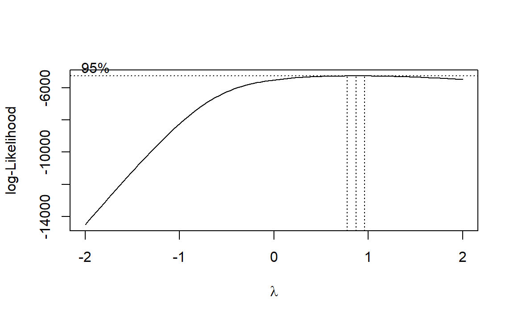
P3 amplitudes met the assumption of normally distributed residuals.
# Visualize normality assumption of residuals (without log transform)
mod_P3_Cat = lm(Trans_P3 ~ Group_pcic, data = P3_Cat)
res.mod_P3_Cat = residuals(mod_P3_Cat)
par(mfrow = c(1, 2))
qqpl_mod_P3_Cat = qqPlot(res.mod_P3_Cat, main = "QQplot before transformation")
norm_mod_P3_Cat = plot(density(res.mod_P3_Cat), main = "Density plot before transformation")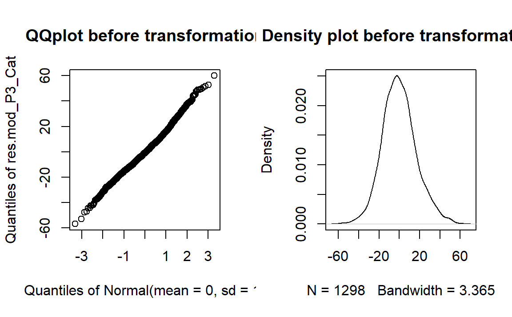
par(mfrow = c(1, 1))LMM_P3_rep: Homoscedasticity
# Check homoscedasticity
plot(fitted(mod_P3_cat.lmer4), residuals(mod_P3_cat.lmer4))
abline(0, 0)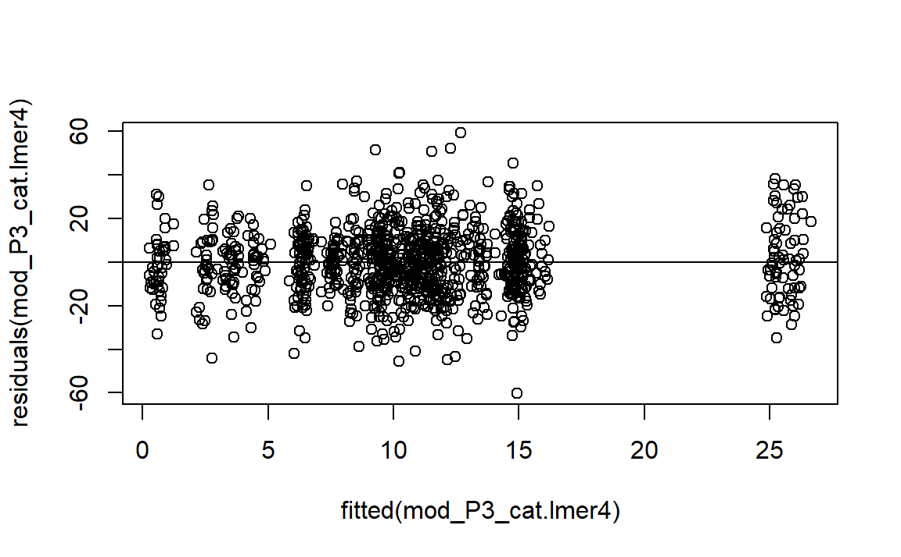
Based on visual inspection, we assumed homoscedasticity.
Results
### Calculate post-hoc tests P1 valence
mod_P1_val_lmer = lmer(mean_ROI_P1 ~ Condition + WM_scal + contr_F1_scal + (1 | ID),
data = P1_Val, control = lmerControl(calc.derivs = FALSE))
# Choose contrasts of interest / add fdr-correction
P1_Val_lmm_model_posthoc = summary(glht(mod_P1_val_lmer, linfct = mcp(Condition = c("neutral - happy = 0",
"neutral - angry = 0")), test = adjusted(type = "fdr")))
# Get ready for presentation in RMarkdown
tab1 = merge(as.data.frame(P1_Val_lmm_model_posthoc$test$coefficients), as.data.frame(P1_Val_lmm_model_posthoc$test$sigma),
by = 0)
tab2 = as.data.frame(P1_Val_lmm_model_posthoc$test$pvalues)
rownames(tab2) = rownames(as.data.frame(P1_Val_lmm_model_posthoc$test$tstat))
tab2 = merge(as.data.frame(P1_Val_lmm_model_posthoc$test$tstat), tab2, by = 0)
P1_Val_posthoc = merge(tab1, tab2, by = "Row.names")
colnames(P1_Val_posthoc) = c("Contrast", "Est.", "Std. Error", "z value", "p value")
### Calculate post-hoc tests for P1
P1_Cat$interaction = interaction(P1_Cat$rep, P1_Cat$emot)
P1_Cat_model = lmer(mean_ROI_P1 ~ interaction + WM_scal + contr_F2_scal + (1 | ID),
data = P1_Cat, control = lmerControl(calc.derivs = FALSE))
# Select contrasts of interest
P1_Cat_model_posthoc = summary(glht(P1_Cat_model, linfct = mcp(interaction = c("repeated.neutral - novel.neutral = 0",
"repeated.happy - novel.happy = 0", "repeated.angry - novel.angry = 0", "novel.neutral - novel.happy = 0",
"novel.neutral - repeated.happy = 0", "repeated.neutral - repeated.happy = 0",
"repeated.neutral - novel.happy = 0", "novel.neutral - novel.angry = 0", "novel.neutral - repeated.angry = 0",
"repeated.neutral - repeated.angry = 0", "repeated.neutral - novel.angry = 0")),
test = adjusted(type = "fdr")))
# Get ready for presentation in RMarkdown
tab1 = merge(as.data.frame(P1_Cat_model_posthoc$test$coefficients), as.data.frame(P1_Cat_model_posthoc$test$sigma),
by = 0)
tab2 = as.data.frame(P1_Cat_model_posthoc$test$pvalues)
rownames(tab2) = rownames(as.data.frame(P1_Cat_model_posthoc$test$tstat))
tab2 = merge(as.data.frame(P1_Cat_model_posthoc$test$tstat), tab2, by = 0)
P1_Cat_posthoc = merge(tab1, tab2, by = "Row.names")
colnames(P1_Cat_posthoc) = c("Contrast", "Est.", "Std. Error", "z value", "p value")
### Calculate post-hoc tests for N170
N170_Cat$interaction = interaction(N170_Cat$rep, N170_Cat$emot)
N170_Cat_model = lmer(N170_Amplitude ~ interaction + Hem + WM_scal + contr_F2_scal +
(1 + Emo_NeuxRep_Nov || ID), data = N170_Cat, control = lmerControl(calc.derivs = FALSE))
# Select contrasts of interest
N170_Cat_model_posthoc = summary(glht(N170_Cat_model, linfct = mcp(interaction = c("repeated.neutral - novel.neutral = 0",
"repeated.happy - novel.happy = 0", "repeated.angry - novel.angry = 0", "novel.neutral - novel.happy = 0",
"novel.neutral - repeated.happy = 0", "repeated.neutral - repeated.happy = 0",
"repeated.neutral - novel.happy = 0", "novel.neutral - novel.angry = 0", "novel.neutral - repeated.angry = 0",
"repeated.neutral - repeated.angry = 0", "repeated.neutral - novel.angry = 0")),
test = adjusted(type = "fdr")))
# Get ready for presentation in RMarkdown
tab1 = merge(as.data.frame(N170_Cat_model_posthoc$test$coefficients), as.data.frame(N170_Cat_model_posthoc$test$sigma),
by = 0)
tab2 = as.data.frame(N170_Cat_model_posthoc$test$pvalues)
rownames(tab2) = rownames(as.data.frame(N170_Cat_model_posthoc$test$tstat))
tab2 = merge(as.data.frame(N170_Cat_model_posthoc$test$tstat), tab2, by = 0)
N170_Cat_posthoc = merge(tab1, tab2, by = "Row.names")
colnames(N170_Cat_posthoc) = c("Contrast", "Est.", "Std. Error", "z value", "p value")
### Calculate post-hoc tests for P3
P3_Cat$interaction = interaction(P3_Cat$rep, P3_Cat$emot)
P3_Cat_model = lmer(mean_ROI_P3 ~ emot * rep + WM_scal + contr_F2_scal + (1 | ID),
data = P3_Cat, control = lmerControl(calc.derivs = FALSE))
# Select contrasts of interest
P3_Cat_model_posthoc = summary(glht(P3_Cat_model, linfct = mcp(emot = c("happy - neutral = 0",
"angry - neutral = 0")), test = adjusted(type = "fdr")))
# Get ready for presentation in RMarkdown
tab1 = merge(as.data.frame(P3_Cat_model_posthoc$test$coefficients), as.data.frame(P3_Cat_model_posthoc$test$sigma),
by = 0)
tab2 = as.data.frame(P3_Cat_model_posthoc$test$pvalues)
rownames(tab2) = rownames(as.data.frame(P3_Cat_model_posthoc$test$tstat))
tab2 = merge(as.data.frame(P3_Cat_model_posthoc$test$tstat), tab2, by = 0)
P3_Cat_posthoc = merge(tab1, tab2, by = "Row.names")
colnames(P3_Cat_posthoc) = c("Contrast", "Est.", "Std. Error", "z value", "p value")P1
P1 amplitudes at Face 1 were significantly larger for emotional vs. neutral facial expressions (\(\beta\) = 2.58, p = 0.02). Post-hoc tests indicated that angry facial expressions elicited larger P1 amplitudes than neutral facial expressions (p = 0.03). The happy vs. neutral contrast was not significant (p = 0.20). Additionally, happy vs. angry facial expressions did not elicit larger P1 amplitudes (\(\beta\) = 0.57, p = 0.38). For Face 2, we also found larger P1 amplitudes to emotional vs. neutral facial expressions (\(\beta\) = 6.89, p < 0.001), but not happy vs. angry facial expressions (\(\beta\) = -0.89, p = 0.41). As shown in Figure @ref(fig:EEG-cat-plot), the main effect for repetition was significant (\(\beta\) = 3.76, p = 0.00) and qualified by an interaction with emotional vs. neutral facial expression (\(\beta\) = -7.35, p = 0.01). Post-hoc test showed that novel happy (p = 0.00), repeated happy (p = 0.01), repeated angry (p = 0.04) and repeated neutral facial expressions (p = 0.01) elicited larger P1 amplitudes than novel neutral facial expressions. Other post-hoc tests did not survive FDR-correction (all p > 0.07). The interaction of repetition with happy vs. angry faces was not significant (\(\beta\) = 0.56, p = 0.72).
N170
Regarding Face 1, we neither detected N170 amplitude differences for emotional vs. neutral facial expressions (\(\beta\) = 0.49, p = 0.48), angry vs. neutral facial expressions (\(\beta\) = 0.67, p = 0.10) nor hemisphere (\(\beta\) = 0.09, p = 0.59). Accordingly, we did not find significant effects for emotion vs. neutral faces \(\beta\) = 0.42, p = 0.73), happy vs. angry faces (\(\beta\) = -0.69, p = 0.30) or repetition (\(\beta\) = 1.02, p = 0.15) at Face 2. We detected a significant interaction of repetition with emotional vs. neutral facial expressions (\(\beta\) = -1.74, p = 0.00). However, none of the post-hoc tests remained significant after FDR-correction (all p > 0.26). Neither the interaction of repetition with angry vs. neutral facial expressions (\(\beta\) = -0.89, p = 0.60) nor the effect of hemisphere were significant (\(\beta\) = 1.78, p = 0.07).
P3
At Face 1, emotional facial expressions did not elicit larger P3 amplitudes than neutral facial expressions (\(\beta\) = 0.98, p = 0.21). P3 amplitude differences between happy and angry facial expressions also failed to reach significance (\(\beta\) = 2.36, p = 0.07). In contrast, P3 amplitudes differed significantly for emotional vs. neutral facial expressions for Face 2 (\(\beta\) = 4.67, p = 0.03). Angry facial expressions elicited larger P3 amplitudes than neutral facial expressions (p = 0.03). No significant difference was found for happy vs. neutral facial expressions (p = 0.31). The happy vs. angry facial expression contrast yielded no significant results (\(\beta\) = 1.38, p = 0.25). Neither repetition (\(\beta\) = 1.88, p = 0.14), nor interactions with facial expression contrasts (emotional vs. neutral facial expressions: \(\beta\) = -4.85, p = 0.12; happy vs. angry facial expressions: \(\beta\) = -0.76, p = 0.67) were significant.
Table: Face 1 results
# Define labels
labels = c("Emotion vs. Neutral", "Happy vs. Angry", "Working Memory", "Stimulus' Contrast",
"Hemisphere")
# Create table
tab_model(mod_P1_val.lmer4, mod_N170_val.lmer2, mod_P3_val.lmer4, show.intercept = FALSE,
pred.labels = labels, string.est = "b", show.se = TRUE, string.se = "SE", show.stat = TRUE,
string.stat = "t", show.ci = FALSE, show.re.var = TRUE, show.obs = FALSE, emph.p = TRUE,
dv.labels = c("P1 Amplitude", "N170 Amplitude", "P3 Amplitude"), show.icc = TRUE)| P1 Amplitude | N170 Amplitude | P3 Amplitude | ||||||||||
|---|---|---|---|---|---|---|---|---|---|---|---|---|
| Predictors | b | SE | t | p | b | SE | t | p | b | SE | t | p |
| Emotion vs. Neutral | 2.58 | 1.11 | 2.32 | 0.020 | 0.49 | 0.70 | 0.70 | 0.481 | 0.98 | 0.78 | 1.27 | 0.205 |
| Happy vs. Angry | 0.57 | 0.66 | 0.88 | 0.382 | 0.67 | 0.41 | 1.63 | 0.104 | 2.36 | 1.32 | 1.80 | 0.072 |
| Working Memory | 0.18 | 0.98 | 0.18 | 0.856 | 0.11 | 0.60 | 0.18 | 0.860 | 0.67 | 1.10 | 0.61 | 0.544 |
| Stimulus’ Contrast | -0.11 | 0.27 | -0.43 | 0.666 | 0.09 | 0.17 | 0.54 | 0.587 | 0.03 | 0.32 | 0.10 | 0.922 |
| Hemisphere | 0.16 | 0.33 | 0.50 | 0.620 | ||||||||
| Random Effects | ||||||||||||
| σ2 | 198.98 | 156.58 | 277.95 | |||||||||
| τ00 | 25.51 ID | 9.67 ID | 0.19 Stim_Type | |||||||||
| 32.03 ID | ||||||||||||
| ICC | 0.11 | 0.06 | 0.10 | |||||||||
| N | 28 ID | 28 ID | 28 ID | |||||||||
| 72 Stim_Type | ||||||||||||
| Marginal R2 / Conditional R2 | 0.002 / 0.116 | 0.001 / 0.059 | 0.003 / 0.107 | |||||||||
Note: p-values for the fixed effects calculated using Wald-statistics approximation, uncorrected. b: unstandardized coefficient; SE: standard error; t: test statistic coefficient; p: p-value; σ2: within-group variance; τ00: between-group variance; ICC: interclass correlation (ratio of between-cluster variance to total variance); N: number of random effects.
Post-hoc test P1: Emotion vs. Neutral contrast
# Create table
kable(P1_Val_posthoc) %>% kable_styling(bootstrap_options = c("hover"), font_size = 14,
fixed_thead = T)| Contrast | Est. | Std. Error | z value | p value |
|---|---|---|---|---|
| neutral - angry | -1.58 | 0.65 | -2.43 | 0.029 |
| neutral - happy | -1.00 | 0.64 | -1.57 | 0.204 |
Table: Face 2 results
# Define labels
labels = c("Emotion vs. Neutral", "Happy vs. Angry", "Repetition", "E vs. N x Repetition",
"H vs. A x Repetition", "Working Memory", "Stimulus' Contrast", "Hemisphere")
# Create table
tab_model(mod_P1_cat.lmer4, mod_N170_cat.lmer4, mod_P3_cat.lmer4, show.intercept = FALSE,
pred.labels = labels, string.est = "b", show.se = TRUE, string.se = "SE", show.stat = TRUE,
string.stat = "t", show.ci = FALSE, show.re.var = TRUE, show.obs = FALSE, emph.p = TRUE,
dv.labels = c("P1 Amplitude", "N170 Amplitude", "P3 Amplitude"), show.icc = TRUE)| P1 Amplitude | N170 Amplitude | P3 Amplitude | ||||||||||
|---|---|---|---|---|---|---|---|---|---|---|---|---|
| Predictors | b | SE | t | p | b | SE | t | p | b | SE | t | p |
| Emotion vs. Neutral | 6.89 | 1.96 | 3.52 | <0.001 | 0.42 | 1.21 | 0.34 | 0.731 | 4.67 | 2.20 | 2.12 | 0.034 |
| Happy vs. Angry | -0.89 | 1.07 | -0.83 | 0.409 | -0.69 | 0.66 | -1.04 | 0.296 | 1.38 | 1.21 | 1.14 | 0.255 |
| Repetition | 3.76 | 1.14 | 3.28 | 0.001 | 1.02 | 0.71 | 1.44 | 0.151 | 1.88 | 1.29 | 1.46 | 0.144 |
| E vs. N x Repetition | -7.35 | 2.78 | -2.65 | 0.008 | -1.74 | 0.88 | -1.98 | 0.048 | -4.85 | 3.12 | -1.55 | 0.121 |
| H vs. A x Repetition | 0.56 | 1.59 | 0.36 | 0.722 | -0.89 | 1.72 | -0.52 | 0.604 | -0.76 | 1.79 | -0.43 | 0.669 |
| Working Memory | 0.81 | 0.94 | 0.86 | 0.388 | 0.53 | 0.69 | 0.77 | 0.438 | 0.30 | 1.26 | 0.24 | 0.810 |
| Stimulus’ Contrast | -0.11 | 0.32 | -0.35 | 0.729 | 0.04 | 0.20 | 0.19 | 0.847 | -0.36 | 0.36 | -0.99 | 0.324 |
| Hemisphere | 1.78 | 0.98 | 1.81 | 0.071 | ||||||||
| Random Effects | ||||||||||||
| σ2 | 187.29 | 143.38 | 236.96 | |||||||||
| τ00 | 22.06 ID | 11.23 ID | 41.73 ID | |||||||||
| 16.82 ID.1 | ||||||||||||
| ICC | 0.11 | 0.07 | 0.15 | |||||||||
| N | 28 ID | 28 ID | 28 ID | |||||||||
| Marginal R2 / Conditional R2 | 0.011 / 0.115 | 0.008 / 0.080 | 0.004 / 0.153 | |||||||||
Note: p-values for the fixed effects calculated using Wald-statistics approximation, uncorrected. b: unstandardized coefficient; SE: standard error; t: test statistic coefficient; p: p-value; σ2: within-group variance; τ00: between-group variance; ICC: interclass correlation (ratio of between-cluster variance to total variance); N: number of random effects.
Post-hoc test P1: Contrast Emotion vs. Neutral with Repetition interaction
# Create table
kable(P1_Cat_posthoc) %>% kable_styling(bootstrap_options = c("hover"), font_size = 14,
fixed_thead = T)| Contrast | Est. | Std. Error | z value | p value |
|---|---|---|---|---|
| novel.neutral - novel.angry | -3.002 | 1.13 | -2.662 | 0.066 |
| novel.neutral - novel.happy | -3.889 | 1.10 | -3.518 | 0.004 |
| novel.neutral - repeated.angry | -3.368 | 1.18 | -2.849 | 0.039 |
| novel.neutral - repeated.happy | -3.691 | 1.16 | -3.168 | 0.015 |
| repeated.angry - novel.angry | 0.366 | 1.15 | 0.319 | 0.999 |
| repeated.happy - novel.happy | -0.198 | 1.11 | -0.179 | 1.000 |
| repeated.neutral - novel.angry | 0.758 | 1.11 | 0.681 | 0.978 |
| repeated.neutral - novel.happy | -0.129 | 1.09 | -0.119 | 1.000 |
| repeated.neutral - novel.neutral | 3.760 | 1.14 | 3.284 | 0.010 |
| repeated.neutral - repeated.angry | 0.392 | 1.15 | 0.339 | 0.999 |
| repeated.neutral - repeated.happy | 0.069 | 1.14 | 0.061 | 1.000 |
Post-hoc test N170: Contrast Emotion vs. Neutral with Repetition interaction
# Create table
kable(N170_Cat_posthoc) %>% kable_styling(bootstrap_options = c("hover"), font_size = 14,
fixed_thead = T)| Contrast | Est. | Std. Error | z value | p value |
|---|---|---|---|---|
| novel.neutral - novel.angry | 0.140 | 0.698 | 0.200 | 1.000 |
| novel.neutral - novel.happy | -0.555 | 0.684 | -0.811 | 0.954 |
| novel.neutral - repeated.angry | -1.321 | 0.731 | -1.807 | 0.407 |
| novel.neutral - repeated.happy | -0.238 | 0.721 | -0.331 | 0.999 |
| repeated.angry - novel.angry | 1.461 | 0.710 | 2.058 | 0.264 |
| repeated.happy - novel.happy | -0.316 | 0.686 | -0.461 | 0.996 |
| repeated.neutral - novel.angry | 1.157 | 0.689 | 1.680 | 0.489 |
| repeated.neutral - novel.happy | 0.463 | 0.672 | 0.689 | 0.977 |
| repeated.neutral - novel.neutral | 1.018 | 0.709 | 1.436 | 0.654 |
| repeated.neutral - repeated.angry | -0.304 | 0.714 | -0.426 | 0.997 |
| repeated.neutral - repeated.happy | 0.779 | 0.704 | 1.107 | 0.849 |
Post-hoc test P3: Contrast Emotion vs. Neutral
# Create table
kable(P3_Cat_posthoc) %>% kable_styling(bootstrap_options = c("hover"), font_size = 14,
fixed_thead = T)| Contrast | Est. | Std. Error | z value | p value |
|---|---|---|---|---|
| angry - neutral | 3.02 | 1.27 | 2.38 | 0.032 |
| happy - neutral | 1.65 | 1.24 | 1.32 | 0.308 |
Session info
# Get session info
sessionInfo()R version 4.0.2 (2020-06-22)
Platform: x86_64-w64-mingw32/x64 (64-bit)
Running under: Windows 10 x64 (build 18362)
Matrix products: default
locale:
[1] LC_COLLATE=German_Germany.1252 LC_CTYPE=German_Germany.1252
[3] LC_MONETARY=German_Germany.1252 LC_NUMERIC=C
[5] LC_TIME=German_Germany.1252
attached base packages:
[1] stats graphics grDevices utils datasets methods base
other attached packages:
[1] gvlma_1.0.0.3 eegUtils_0.5.0 forcats_0.5.0 stringr_1.4.0
[5] purrr_0.3.4 readr_1.3.1 tidyr_1.1.1 tibble_3.0.3
[9] tidyverse_1.3.0 sjlabelled_1.1.7 sjmisc_2.8.5 sjPlot_2.8.4
[13] Rmisc_1.5 plyr_1.8.6 reshape2_1.4.4 psych_2.0.7
[17] multcomp_1.4-15 TH.data_1.0-10 mvtnorm_1.1-1 MASS_7.3-51.6
[21] lmerTest_3.1-3 lme4_1.1-23 Matrix_1.2-18 Hmisc_4.4-2
[25] Formula_1.2-4 survival_3.2-7 lattice_0.20-41 ggstatsplot_0.6.6
[29] ez_4.4-0 EnvStats_2.4.0 eeptools_1.2.4 ggplot2_3.3.2
[33] dplyr_1.0.1 cowplot_1.1.0 summarytools_0.9.6 miceadds_3.10-28
[37] mice_3.11.0 rmdformats_1.0.0 XLConnect_1.0.1 kableExtra_1.1.0
loaded via a namespace (and not attached):
[1] vcd_1.4-8 ps_1.5.0 lmtest_0.9-38
[4] crayon_1.3.4 V8_3.4.0 PMCMRplus_1.7.1
[7] nlme_3.1-151 backports_1.1.8 metafor_2.4-0
[10] reprex_0.3.0 ggcorrplot_0.1.3 rlang_0.4.7
[13] readxl_1.3.1 performance_0.6.1 nloptr_1.2.2.2
[16] callr_3.5.1 glue_1.4.1 loo_2.4.1
[19] rstan_2.21.2 parallel_4.0.2 processx_3.4.5
[22] shinydashboard_0.7.1 tcltk_4.0.2 haven_2.3.1
[25] tidyselect_1.1.0 rio_0.5.16 zoo_1.8-8
[28] SuppDists_1.1-9.5 mc2d_0.1-18 xtable_1.8-4
[31] MatrixModels_0.4-1 magrittr_2.0.1 evaluate_0.14
[34] cli_2.2.0 rstudioapi_0.13 miniUI_0.1.1.1
[37] sp_1.4-4 rpart_4.1-15 shiny_1.5.0
[40] xfun_0.22 parameters_0.10.1 inline_0.3.17
[43] pkgbuild_1.2.0 cluster_2.1.0 bridgesampling_1.0-0
[46] WRS2_1.1-0 expm_0.999-5 Brobdingnag_1.2-6
[49] ggrepel_0.8.2 listenv_0.8.0 png_0.1-7
[52] reshape_0.8.8 future_1.21.0 zeallot_0.1.0
[55] withr_2.3.0 rcompanion_2.3.26 cellranger_1.1.0
[58] pracma_2.2.9 coda_0.19-4 pillar_1.4.7
[61] RcppParallel_5.0.2 Rmpfr_0.8-2 fs_1.5.0
[64] paletteer_1.2.0 vctrs_0.3.2 ellipsis_0.3.1
[67] generics_0.1.0 nortest_1.0-4 tools_4.0.2
[70] foreign_0.8-80 munsell_0.5.0 emmeans_1.5.3
[73] fastmap_1.0.1 compiler_4.0.2 abind_1.4-5
[ reached getOption("max.print") -- omitted 124 entries ]